Trabajo Final de Grado
El cuándo de mi por qué
La revitalización del folklore argentino en la era del Tecnoceno.
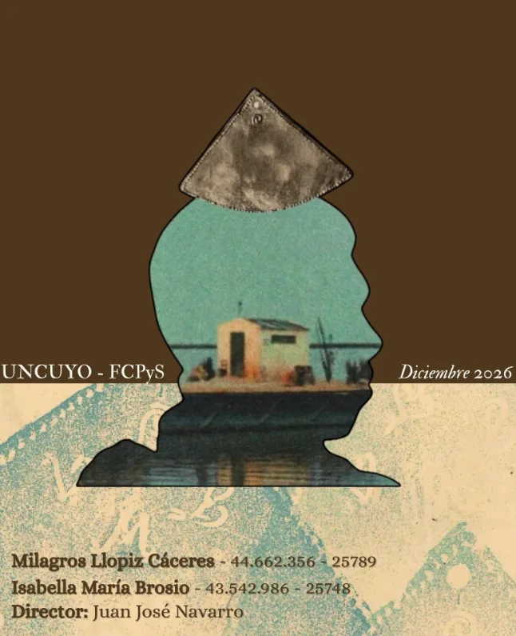
Agradecimientos
Llegar hasta acá significa mucho más que concluir una etapa académica. Detrás de estas páginas hay años de aprendizajes, esfuerzo, incertidumbres, momentos de entusiasmo y otros en los que seguir adelante no siempre fue sencillo. Por eso, esta tesis también es el resultado del acompañamiento, el cariño y la confianza de muchas personas que, de distintas maneras, formaron parte de nuestro recorrido.
A nuestras familias, por sostenernos a lo largo de estos años, por su paciencia, por acompañar nuestras decisiones y por estar presentes incluso cuando las palabras no alcanzaban. Gracias por confiar en nosotras, por celebrar nuestros logros y por darnos la tranquilidad de saber que siempre teníamos un lugar al que volver.
A nuestros amigos y amigas, por hacer más llevadero el camino, por compartir las alegrías, escuchar nuestras preocupaciones, acompañar los momentos de cansancio y recordarnos, tantas veces, que también había que disfrutar el proceso.
A nuestros docentes, compañeros y compañeras, por los encuentros, las conversaciones y los aprendizajes que fueron parte de nuestra formación y que contribuyeron a construir nuestra mirada sobre la comunicación y el mundo que nos rodea.
A la universidad pública, por darnos la posibilidad de formarnos, de cuestionar, de aprender y de imaginar otros horizontes. No solo nos permitió construir un camino profesional, sino que también nos enseñó el valor del pensamiento crítico, del conocimiento compartido y de entender la educación como un derecho. Esta tesis es, también, una forma de reconocer y agradecer esa oportunidad.
A todas las personas que, de alguna manera, hicieron posible que llegáramos hasta este momento, que nos tendieron una mano, nos alentaron o confiaron en nosotras, les agradecemos profundamente.
Y, finalmente, a nosotras mismas, por haber compartido este camino, por la paciencia, el compromiso y la perseverancia; por sostenernos mutuamente en los momentos difíciles y por haber convertido este proyecto en una experiencia que, más allá de su resultado, nos llevamos para siempre.
Introducción
¿Qué sucede cuando una zamba comienza a sonar en el universo musical de una generación que creció escuchando trap, rap y música urbana? ¿Qué vínculos pueden establecerse entre las voces de Mercedes Sosa y Silvio Rodríguez y las de artistas que construyeron sus primeras audiencias a través de YouTube y las plataformas digitales? Lejos de tratarse de encuentros aislados, estas articulaciones permiten advertir que el folklore argentino continúa encontrando formas de expresión y circulación en escenarios culturales que se transforman constantemente. Aquello que durante mucho tiempo pareció asociado a las generaciones adultas, a determinados repertorios y a una idea estable de tradición hoy vuelve a interpelar a públicos jóvenes, que lo recuperan y lo ponen en diálogo con sus propios lenguajes y experiencias.
Este fenómeno invita a revisar algunas ideas arraigadas sobre el lugar del folklore en la cultura popular. ¿Se fue realmente o nunca dejó de estar presente? ¿Volvió o encontró otras maneras de hacerse escuchar? No se trata de un regreso en sentido estricto, porque aquello que vuelve nunca lo hace exactamente de la misma manera: cada generación recupera, selecciona y transforma los elementos culturales que recibe. En ese proceso, la tradición no permanece intacta, sino que se actualiza a través de nuevas apropiaciones, interpretaciones y formas de circulación.
En los últimos años, esta transformación también se refleja en los hábitos de consumo musical. Según un informe de Spotify, uno de cada tres oyentes de folklore argentino en el país tiene menos de 30 años. El mismo relevamiento señala que las reproducciones del género crecieron un 85% entre 2020 y 2025, mientras que, si se considera la última década (2015-2025), el incremento alcanza el 1.645%. Asimismo, registra más de 16,5 millones de playlists creadas por usuarios que incluyen folklore argentino, desde repertorios clásicos hasta propuestas contemporáneas (Frascini, 2026). Estas cifras permiten dimensionar la expansión del género entre las nuevas generaciones y plantean la necesidad de comprender qué condiciones culturales, tecnológicas y musicales intervienen en este proceso.
La transformación no puede explicarse únicamente a partir de las posibilidades que ofrecen las plataformas digitales. Si bien los entornos digitales modificaron las formas de producir, distribuir, descubrir y consumir música, también resulta necesario atender a las propuestas de artistas concretos que, desde sus trayectorias y decisiones creativas, intervienen en ese escenario. La revitalización del folklore puede comprenderse, entonces, a partir de la articulación entre condiciones estructurales (vinculadas con la industria musical, las tecnologías de comunicación y las prácticas de consumo) y experiencias particulares que habilitan nuevas formas de reapropiación, relectura y circulación de las tradiciones populares.
En ese contexto se inscribe la propuesta de Milo J, cuyo recorrido permite observar cómo un artista vinculado inicialmente con la música urbana incorpora elementos del folklore argentino y los pone en diálogo con otros lenguajes musicales y audiovisuales. El punto de partida de esta investigación fue el análisis de La vida era más corta (2025), un álbum de quince canciones que recupera repertorios, sonoridades y referencias de la tradición folklórica desde una perspectiva contemporánea. Sin embargo, a medida que avanzó el trabajo, el objeto de estudio comenzó a ampliarse: a la producción musical se sumaron otras experiencias y contenidos que permiten reconocer un universo creativo en permanente expansión. Entre ellos se encuentran el proyecto ¡FAlklore!, la presentación de Milo J en Tiny Desk Concerts y la propuesta audiovisual La Jangada, además de otras producciones, colaboraciones y registros que extienden las formas en que su música se vincula con el folklore.
Por este motivo, la investigación propone abordar no solo el álbum, sino el universo Milo J en sus distintas dimensiones. Esta perspectiva permite considerar tanto el contenido musical y lírico de las canciones como sus representaciones visuales, sus puestas en escena y sus formas de circulación. El análisis comprende la dimensión sonora y lírica de las quince canciones de La vida era más corta, así como su despliegue visual y performático —portada, identidad gráfica, videoclips, visualizers y sesiones en vivo—. También incorpora otras producciones audiovisuales vinculadas con el artista, entrevistas, declaraciones de Milo J y de su equipo creativo, registros periodísticos y datos sobre reproducción y consumo en plataformas digitales.
La investigación se construye, además, desde la articulación de distintos registros de análisis. Por un lado, adopta una perspectiva académica, conceptual e interpretativa, que recupera aportes de las ciencias sociales y de la comunicación para comprender las transformaciones del folklore y de las industrias culturales. Por otro, incorpora herramientas del análisis de contenido para examinar las canciones y las producciones audiovisuales que integran el universo estudiado. Finalmente, recurre a un registro periodístico a través del relevamiento y la lectura de entrevistas, testimonios, declaraciones y materiales de prensa, que permiten reconstruir los procesos creativos y las decisiones estéticas involucradas en estas propuestas. Esta combinación busca poner en diálogo las dimensiones artísticas y culturales del fenómeno con las experiencias de sus protagonistas y las condiciones en las que se produce y circula.
Para desarrollar este recorrido, resulta necesario, en primer lugar, reconstruir algunos de los rasgos que configuraron el paradigma clásico del folklore argentino: sus repertorios, sonoridades, instrumentos, formas de interpretación, representaciones de la identidad nacional y mecanismos históricos de legitimación. A partir de esa caracterización, se busca reconocer de qué manera dichos sentidos y convenciones se ven tensionados, desplazados y resignificados en el contexto del Tecnoceno, entendido como un escenario en el que las tecnologías digitales intervienen en las prácticas culturales, las formas de producción y los modos de circulación y consumo. En este marco, la propuesta de Milo J permite analizar operaciones de reapropiación, relectura, reescritura e hibridación que ponen en contacto elementos de la tradición folklórica con lenguajes y estéticas contemporáneas.
La investigación se organiza en cuatro capítulos que abordan la revitalización del folklore argentino desde una perspectiva histórica, conceptual, estética y sociotécnica. El primer capítulo, La problematización de la identidad cultural, el consumo y las industrias culturales desde las ciencias sociales, desarrolla el marco teórico y sociohistórico que sustenta el trabajo. En él se examinan los procesos de construcción de la identidad nacional argentina, las tensiones entre homogeneización global y reterritorialización, y las transformaciones en los estudios sobre consumos culturales, desde la perspectiva crítica de la Escuela de Frankfurt hasta los aportes de Jesús Martín-Barbero sobre las mediaciones y la recepción activa. Asimismo, se aborda la definición del objeto folklórico, se recuperan los principales rasgos del paradigma clásico del folklore y se reconstruyen dos momentos significativos de renovación del género: el Movimiento del Nuevo Cancionero, en la década de 1960, y el folklore joven, en los años noventa.
El segundo capítulo, Volver a las raíces para mirar el presente: la propuesta musical de Milo J, se concentra en el análisis del álbum La vida era más corta. A partir de la trayectoria del artista y de su posicionamiento dentro del campo musical, se examinan las operaciones de reapropiación y resignificación de elementos de la tradición folklórica. Para ello, se recuperan las categorías de qhipnayra y lo ch’ixi, desarrolladas por Silvia Rivera Cusicanqui, como herramientas para interpretar las relaciones entre pasado y presente, así como la coexistencia de elementos culturales diversos. El capítulo aborda también los principales ejes temáticos del disco, su identidad visual y sus vínculos con el paradigma clásico del folklore.
El tercer capítulo, El folklore en imágenes: narrativas audiovisuales y nuevas escenas de circulación, amplía el análisis hacia las dimensiones visuales y performáticas de la propuesta. Se estudian los videoclips y visualizers del álbum, atendiendo a sus principales recursos iconográficos y a las representaciones del territorio, la infancia, la muerte y la religiosidad popular. También se analiza la presentación de Milo J en Tiny Desk Concerts, considerando los objetos que integran la puesta en escena y sus posibles significaciones, así como la producción cinematográfico-musical La Jangada. Por último, se exploran los circuitos de difusión y sociabilidad que acompañan estas propuestas, tanto en entornos digitales como en espacios presenciales, a través de experiencias como ¡FAlklore!, los canales de streaming y las nuevas peñas urbanas.
Para concluir el recorrido, el cuarto capítulo, Plataformas digitales, consumos culturales y circulación del folklore en el Tecnoceno, se ocupa de las condiciones tecnológicas y económicas que intervienen en la producción, circulación y monetización de la música contemporánea. Desde los aportes de Flavia Costa sobre el Tecnoceno y de Nick Srnicek sobre el capitalismo de plataformas, se examinan los procesos de digitalización, datificación y gubernamentalidad algorítmica, así como las particularidades de plataformas como Spotify y YouTube. Además, se aborda el fenómeno de la nostalgia recibida en las audiencias jóvenes, se recuperan estadísticas sobre los consumos culturales en Argentina y se analizan las métricas de circulación del álbum y su reconocimiento en instancias institucionales de la industria musical, como los Premios Gardel y los Latin Grammy.
Capítulo 1
La problematización de la identidad cultural, el consumo y las industrias culturales desde las ciencias sociales
“¿Seré una buena persona
O un condenado a vivir en un bucle
De un tonto pasado que espera que solo me eduque
Sin dejar ver el porqué de lo que hago?”
- Milo J (2025), “Recordé”, La vida era más corta.
Argentina se caracteriza por su capacidad de recibir e integrar grandes masas migratorias, proceso que forma parte constitutiva de su identidad nacional. La expresión “El argentino nace donde quiere” invita a preguntarse: ¿qué significa ser argentino?
Las naciones no constituyen entidades materiales preexistentes, sino construcciones humanas que habitan en la mente y el corazón de sus integrantes. En palabras del politólogo Benedict Anderson, son “comunidades políticas imaginadas” (1993:23) .
Para el autor, una nación es imaginada, limitada y soberana: imaginada porque la enorme mayoría de sus integrantes nunca se conocerán personalmente, pero conciben que existe entre ellos un vínculo común; limitada porque toda nación reconoce fronteras más allá de las cuales existen otras; y soberana porque la idea moderna de nación surgió mientras perdían legitimidad los antiguos órdenes dinásticos y religiosos. Imaginada no significa, por tanto, falsa o inventada arbitrariamente, sino que describe la forma cultural mediante la cual millones de desconocidos pueden pensarse como miembros de un mismo nosotros.
Tras la independencia, lo que hoy llamamos Argentina, debió afrontar el desafío de lograr que los habitantes de los territorios heredados del Virreinato se reconocieran como parte de un mismo grupo humano. Entre las primeras decisiones formales de la República se estableció, en la Constitución Nacional (1853), una concepción abierta de la pertenencia nacional, propósito que se expresa en el preámbulo: “promover el bienestar general, y asegurar los beneficios de la libertad, para nosotros (...), y para todos los hombres del mundo que quieran habitar el suelo argentino”. (Constitución de la Nación Argentina, 1853:1)
Ese proceso de conformación estatal no se limitó a la definición de fronteras o marcos jurídicos, sino que implicó disputar tanto en el plano material —la organización territorial, económica e institucional— como en el simbólico, en la medida en que el Estado-nación buscó fijar sentidos compartidos de pertenencia frente a las dinámicas globales y de poder que articulan históricamente a los Estados con el sistema-mundo.
Para consolidar esa identidad colectiva, el Estado impulsó prácticas e instituciones como la educación pública, el servicio militar obligatorio, la historia académica y una cultura nacional legitimada, dentro de la cual veremos que el folklore será parte. Las grandes oleadas inmigratorias del siglo pasado pusieron a prueba ese proyecto: la incorporación de millones de personas con distintas lenguas, culturas y credos contribuyó a la síntesis de una identidad nacional.
La construcción identitaria puede entenderse, entonces, como un proceso abierto que busca integrar a quienes ya forman parte de la sociedad, a quienes llegan y a quienes desean incorporarse a ella, al mismo tiempo que excluye y expulsa a ciertos sectores, como el indio y el negro. La cultura está compuesta por elementos cambiantes, híbridos y contextuales. Esto supone distanciarse de las estructuras anteriores y de las formas de dominación previas sin negarlas, sino resignificando sus componentes, seleccionando algunos elementos, descartando otros, construyendo nuevas identidades y reivindicando las pasadas. Estos procesos de hibridación, conscientes o inconscientes, han marcado la historia y la construcción de la identidad y la cultura argentina a lo largo del tiempo.
Sin embargo, el proyecto de forjar lo nuestro se vio atravesado por el avance de un sistema global que reorganizó distintos ámbitos del mundo moderno: el capitalismo. Como advierte Aníbal Quijano (2010), este sistema no opera únicamente como un modo de producción económica, sino como un nuevo patrón de poder mundial de carácter colonial y moderno. Surgido a partir de la expansión europea sobre América, dicho patrón articuló el control del trabajo y de los recursos con una jerarquización cultural y epistémica que ubicó a Europa occidental como centro de la modernidad y relegó a las culturas colonizadas a una posición periférica y subalterna.
Según Stuart Hall (1984), para consolidarse como un orden social integral, este sistema no podía limitarse al control económico, sino que debía transformar la vida cotidiana, el tiempo libre, la moral y los hábitos de la clase trabajadora. Para ello, era necesario “reeducar/reformar” al pueblo, disciplinándolo y adaptándolo a las exigencias del sistema capitalista. En palabras del autor:
El capital tenía interés en la cultura de las clases populares porque la constitución de todo un orden social nuevo alrededor del capital requería un proceso más o menos continuo, pero intermitente, de reeducación en el sentido más amplio de la palabra. Y en la tradición popular estaba uno de los principales focos de resistencia a las formas por medio de las cuales se pretendía llevar a término esta «reformación» del pueblo. (Hall, 1984:1)
En este escenario, las costumbres, los ritos y las formas de vida tradicionales de las clases populares constituían un obstáculo para la imposición de ese orden. Las clases subalternas preservaban sus tradiciones porque encontraban en ellas una fuente de organización y de identidad comunitaria. Por esta razón, la tradición funcionó como un foco primario de resistencia frente a la reorganización impulsada por el capital.
La identidad nacional argentina tampoco quedó al margen de las lógicas de mercantilización. Sus repertorios y símbolos tradicionales se incorporaron tempranamente a distintos sectores de la industria cultural, donde comenzaron a producirse y circular como mercancías masivas.
En América Latina, la identidad cultural no reposa en una pureza incontaminada, sino en el mestizaje continuo, donde conviven distintas temporalidades y matrices culturales: lo indígena, lo rural, lo urbano, lo popular y lo masivo.
Cuando consumir cultura se transformó en una mercancía cuantificable
El estudio de los consumos culturales ha estado atravesado por tensiones teóricas en torno al papel de los medios de comunicación, las industrias culturales y los sujetos consumidores. Esta problemática ocupó un lugar central en las ciencias sociales. Desde la perspectiva crítica de la Escuela de Frankfurt, Theodor Adorno y Max Horkheimer, caracterizaban la industria cultural como un sistema de dominación, estandarización y mercantilización serializada de la cultura. Bajo esta lógica, la producción simbólica queda reducida al entretenimiento y subordinada a la lógica de las mercancías, lo que aliena al sujeto y convierte al público en una audiencia pasiva, receptora de productos masivos homogéneos (Grillo et al., 2016).
Posteriormente, el desarrollo de la sociología de la cultura y de los estudios de comunicación produjo un viraje conceptual: la atención dejó de centrarse exclusivamente en la omnipotencia de la emisión y se orientó hacia la actividad del receptor y las mediaciones de la vida cotidiana. Este cambio permitió superar las perspectivas moralistas que interpretaban el consumo como una práctica irreflexiva, asociada a compras, gastos inútiles o manipulación vertical. En su lugar, comenzó a entenderse como un proceso sociocultural multidimensional (Grillo et al., 2016), mediante el cual los sujetos construyen significados y sentidos de vida a través de la apropiación y el uso activo de los bienes simbólicos.
La constitución del mundo como un todo en permanente transformación responde a múltiples procesos globalizadores. Entre ellos se encuentran la expansión del capitalismo y del imperialismo occidental, la consolidación de una nueva división mundial del trabajo, el desarrollo de un sistema global de medios de comunicación, la formación de sociedades nacionales, el sistema de relaciones internacionales y la difusión de las concepciones ilustradas de individuo y humanidad.
Según Rosas Mantecón (1993), el término globalización comenzó a utilizarse en el ámbito de las empresas transnacionales y, hasta la segunda mitad de la década de 1980, se extendió entre los círculos intelectuales, empresariales y los medios de comunicación.
Desde entonces, esta noción pasó a definir el estrechamiento de las distancias y la creciente interconexión económica, política y tecnológica a escala planetaria, impulsada por el peso de los mercados financieros, la transnacionalización del capital y la irrupción de las tecnologías de la información en la vida cotidiana. A la par, este proceso trajo consigo una fuerte tendencia hacia la homogeneización y la tecnificación bajo lógicas occidentales y mercantiles, abriendo una tensión constante frente a las realidades y culturas locales.
Las transformaciones culturales asociadas a estos procesos se manifiestan de distintas maneras. Una de ellas es el distanciamiento entre tiempo y espacio, por el cual la modernidad y el desarrollo técnico de las telecomunicaciones separan la experiencia temporal de una ubicación geográfica específica. Esto permite que los sujetos sean simultáneamente locales y globales.
También se produce una desterritorialización de la producción cultural (Rosas Mantecón, 1993): gran parte de los bienes y mensajes simbólicos que circulan y se consumen en un país ya no se producen exclusivamente dentro de sus fronteras ni expresan una pertenencia puramente nacional, sino que presentan signos de un sistema global desterritorializado.
Como señala Rosas Mantecón (1993), frente a las presiones de homogeneización, se observa un reforzamiento de las identidades locales (o reterritorialización), expresado en la reafirmación de las identidades locales, étnicas y comunitarias. En los contextos urbanos y multiculturales, la etnicidad adquiere relevancia como principio de organización de la interacción social. No obstante, cuando las identidades se atrincheran defensivamente ante la pérdida de poder nacional, también pueden surgir manifestaciones regresivas, como el fundamentalismo y el racismo.
Además, la autora menciona otra transformación: el surgimiento de las culturas globales (o terceras culturas). La globalización se sustenta, entre otros procesos, en ciertas formas de homogeneización cultural. La sociedad del consumo constituye una de sus expresiones, ya que personas que habitan lugares diferentes pueden compartir visiones del mundo, necesidades de consumo, disponibilidades cotidianas y estéticas.
En este marco, Néstor García Canclini define el consumo como el “conjunto de procesos socioculturales en los que se realizan la apropiación y los usos de los productos” (García Canclini, 1995:42). Esta definición permite superar una interpretación limitada a la adquisición de bienes y reconocer las distintas racionalidades que intervienen en estas prácticas.
Según la tipología multidisciplinaria propuesta por García Canclini, los procesos de consumo se estructuran a través de diversas racionalidades complementarias. Por un lado, la racionalidad económica concibe el consumo como un momento del ciclo productivo orientado a la expansión del capital y a la reproducción de la fuerza de trabajo. Por otro lado, la racionalidad sociopolítica interactiva lo entiende como un espacio de disputa, negociación e interacción entre grupos sociales por la apropiación del producto social sobrante.
Asimismo, el autor identifica la racionalidad simbólica y de distinción, en diálogo con Bourdieu, que explica cómo el acceso a bienes escasos permite construir signos de estatus y diferenciación social. La racionalidad integrativa y comunicativa, en cambio, señala que los significados de los bienes deben ser comunitariamente compartidos para que la distinción resulte inteligible y contribuya a la cohesión social. Finalmente, la racionalidad ritual y de ordenamiento explica que los bienes funcionan como accesorios rituales que permiten contener el flujo errático de significados y otorgar estabilidad al orden social.
En este contexto, como explica Rosas Mantecón (1993), se forman estratos sociales y grupos desterritorializados que, aunque habitan territorios diferentes, comparten concepciones del mundo, hábitos de consumo, referentes estéticos y estilos de vida. Esto se relaciona con una educación visual común impartida por las industrias culturales, que contribuye a generar referencias compartidas más allá de las fronteras nacionales.
De acuerdo con Stuart Hall (1984), la globalización cultural se desarrolla en un terreno contradictorio: para conservar su posición global, el capital necesita negociar, incorporar y reflejar parcialmente las diferencias que busca abatir. En este proceso surgen las llamadas terceras culturas, entendidas como identidades y formas culturales transnacionales que adquieren autonomía respecto de los Estados nacionales. Al atravesar las fronteras, generan referentes, valores y prácticas compartidos por grupos asentados en distintos territorios.
La nueva cultura empresarial e internacional constituye un ejemplo de estas formaciones. No obstante, la antropología advierte que no existe una única cultura global homogénea e imperativa, sino culturas globales en plural, dado que la homogeneización nunca llega a completarse.
La hibridación, categoría central en la obra de Néstor García Canclini (1990) y retomada por Ana Rosas Mantecón (1993), permite comprender cómo las culturas locales responden creativamente a las ofertas internacionales, en lugar de quedar sometidas a una aculturación pasiva o a una dominación absoluta del centro sobre la periferia. Para García Canclini, estos procesos de cruce e intercambio dan cuenta de la desarticulación de las fronteras rígidas entre lo culto, lo popular y lo masivo, así como de la coexistencia de distintas temporalidades históricas y matrices culturales. En este mismo sentido, la interacción entre los flujos globales y las producciones locales hace que “lo internacional se combine implacablemente con lo local” (Rosas Mantecón, 1993:84), dando origen a formas culturales híbridas que se resignifican en medio de tensiones, desigualdades y disputas simbólicas.
Desde esta perspectiva, la autora sostiene que el análisis local o regional no debe abandonarse, sino adquirir una nueva dimensión que reconozca cómo lo local está constitutivamente atravesado e integrado por lo transnacional. Para evitar tanto los localismos cerrados como un globalismo abstracto, propone una metodología orientada a la glocalización. Esta supone trascender una mirada comunitaria restringida a la territorialidad y examinar los circuitos globales en los que se inscriben los sujetos estudiados.
Ana Rosas Mantecón (1993) propone superar el concepto clásico y estático de identidad, que la vincula rígidamente con la tradición, el territorio y la homogeneidad, e interpreta las transformaciones culturales como una “pérdida” o “aculturación”. El incremento de los flujos culturales globales no implica una simple erosión de lo nacional, sino una flexibilización identitaria y una negociación entre nacionalismo y cosmopolitismo.
Por último, los estudios sobre recepción cultural muestran que, aunque las tecnologías de la información y los satélites posibilitan la circulación planetaria de bienes y mensajes, la respuesta de los espectadores no es uniforme ni pasiva. La heterogeneidad de los públicos y sus condiciones locales —edad, género, etnia y religión— proporcionan códigos específicos para la descodificación y reinterpretación de los mensajes masivos. En consecuencia, las tecnologías y la modernidad no sustituyen mecánicamente las tradiciones: bajo determinadas condiciones, pueden contribuir a la recuperación, el fortalecimiento y la reconfiguración de las culturas locales (Grillo et al., 2016).
En este marco, comprender la cultura como un campo dinámico de mediaciones, hibridaciones y apropiaciones activas invita a repensar el lugar que ocupan las tradiciones en las sociedades contemporáneas atravesadas por el mercado y la globalización. Lejos de quedar relegadas como reliquias inmóviles o de desaparecer frente a la cultura masiva, estas expresiones se transforman y dialogan con los nuevos lenguajes y soportes tecnológicos. Para profundizar en esta articulación, resulta necesario precisar qué se entiende por folklore y cómo sus manifestaciones transitan entre la memoria comunitaria, la identidad nacional y el consumo cultural.
El folklore como objeto de consumo y de identidad cultural
El término Folk-Lore fue propuesto por William John Thoms en una carta dirigida a una revista de Londres, publicada el 22 de agosto de 1846. Su intención era reemplazar expresiones ambiguas que se utilizaban en aquella época, como “antigüedades populares” y “literatura popular”, por una denominación más precisa que designara el saber tradicional (lore) del pueblo (folk) (Cortazar, 1959, p.7). En esa misma carta, el concepto remitía al estudio de los usos, las costumbres, las ceremonias, las creencias, los romances y los refranes de tiempos antiguos que habían sobrevivido en el pueblo.
Sin embargo, la propia categoría de pueblo y el lugar asignado a sus saberes tradicionales no estuvieron libres de disputas ideológicas desde el siglo XIX. Como advierte Jesús Martín-Barbero (1987), el surgimiento del interés por el folklore estuvo atravesado por una ambigüedad en torno a la afirmación y la negación del pueblo como sujeto histórico: mientras la mirada romántica exaltó lo popular a condición de aislarlo en una pureza originaria —congelándolo en el pasado y convirtiéndolo en pieza de archivo o museo—, tanto las corrientes ilustradas como ciertas lecturas de las izquierdas tendieron a desconfiar de las tradiciones folklóricas, ya sea por considerarlas obstáculos frente al progreso moderno o por disolver la especificidad cultural del pueblo en la categoría política de clase. De este modo, al "secuestrar" la cultura popular y relegarla a un tiempo pasado, se le negó su capacidad de transformarse y dialogar con el presente, pues, en palabras del autor, “culturalmente el pueblo pertenece al pasado, el futuro es asunto de los ilustrados” (Martín-Barbero, 1987:20).
Tomando en cuenta sus distintos usos, el término folklore también se emplea para referirse a determinadas expresiones artísticas, como las danzas, las canciones, la música y las representaciones teatrales y cinematográficas, que no son producidas espontánea y tradicionalmente por el folk de una región, sino por artistas particulares que incorporan en sus obras el estilo, el carácter, las formas o el ambiente propios de la cultura popular (Cortazar, 1959, p.8).
Estas manifestaciones no constituyen fenómenos folklóricos en sentido estricto, sino proyecciones folklóricas (Cortazar, 1959): expresiones que trasladan elementos de la tradición al ámbito urbano y a la creación artística individual, destinadas a públicos que no necesariamente pertenecen al folk originario y que, en ocasiones, pueden limitarse a élites especializadas. Su producción, expresión y difusión requieren recursos técnicos, organizativos y comerciales complejos —como imprentas, escenarios, maquinarias e infraestructura especializada— que se diferencian de las condiciones del mundo popular tradicional.
Las proyecciones folklóricas pueden manifestarse en numerosos campos: novela, cuento, poesía, sainete, música, coreografía, radio, televisión, pintura, escultura, cine y fotografía. Aunque las expresiones artísticas son las más visibles y difundidas, también aparecen en la industria, por ejemplo, en la tejeduría, la platería y la cerámica; en la moda femenina y en el arte culinario. Asimismo, el aprovechamiento de materiales folklóricos en las escuelas y la enseñanza sistematizada de las danzas nativas constituyen ejemplos de proyecciones de carácter pedagógico (Cortazar, 1959, p. 8).
Según la categorización de Augusto Raúl Cortazar (1959), desarrollada en Esquema del Folklore, la incorporación y reelaboración de elementos tradicionales en una obra musical realizada por un artista urbano dentro de la industria discográfica, como sucede en el caso de Milo J, corresponde a una proyección folklórica y no a un trasplante. Esta distinción se fundamenta en el carácter de la creación, los sujetos que la producen, el ámbito en el que se desarrolla, los medios utilizados y su función social.
La proyección folklórica consiste en la recreación o reelaboración de expresiones tradicionales —como la música, las danzas, el teatro, la literatura y las artesanías— por parte de artistas o productores determinados, quienes recuperan y reflejan en sus obras los estilos, las formas y el ambiente de la cultura popular (Cortazar, 1959, p. 8). Se caracteriza, en primer lugar, por la creación artística e individual, ya que no surge espontáneamente de la comunidad folk, sino que responde a una elaboración autoral. En segundo lugar, involucra medios complejos de producción e industria, puesto que su realización y difusión pueden requerir estudios de grabación, producción técnica, escenarios, imprentas, medios de comunicación y plataformas digitales como Spotify y YouTube. Por último, está dirigida a un público externo, generalmente urbano y masivo, que trasciende al grupo folk local u originario y puede incluir también a sectores de élite (Cortazar, 1959).
El trasplante folklórico, en cambio, es una categoría que el propio Cortazar (1959) propone para referirse a la práctica de manifestaciones tradicionales —como canciones, bailes, comidas típicas y hábitos del habla— por parte de integrantes auténticos del folk que se han trasladado fuera de su medio geográfico y social de origen. Un ejemplo sería el de migrantes provincianos que reproducen sus prácticas culturales en las grandes ciudades. En este caso, el sujeto que realiza la manifestación pertenece efectivamente a la comunidad de origen y conserva las expresiones tradicionales; sin embargo, estas se encuentran “desengranadas de su sistema funcional” (Cortazar, 1959, p. 9), porque se han desprendido del contexto comunitario en el que surgieron.
Como consecuencia, el trasplante implica una pérdida de la función original: la práctica deja de responder plenamente a las necesidades cotidianas de su contexto de procedencia y adquiere una motivación principalmente evocativa o nostálgica. De este modo, puede funcionar como una forma de añoranza del terruño o como una afirmación de la identidad regional frente a un entorno urbano percibido como ajeno o indiferente (Cortazar, 1959, pp. 9-10).
Esta distinción permite analizar el folklore no solo como expresión de identidad cultural, sino también en relación con su circulación, transformación y conversión en objeto de consumo. Es decir, distinguir entre proyección y trasplante ayuda a comprender cómo las manifestaciones tradicionales, además de representar la identidad de una comunidad, se difunden, se reelaboran y pasan a formar parte del consumo cultural.
¿Quién dice qué es folklore?
Según la Real Academia Española (RAE), revitalizar significa “dar más fuerza y vitalidad a algo” (RAE, s. f.). No obstante, para comprender el alcance de este concepto, resulta interesante detenerse en los distintos sentidos que puede adquirir el prefijo re-: repetición, movimiento hacia atrás o retorno, intensificación y oposición o resistencia (RAE, s. f.).
De estas acepciones, nos interesa recuperar particularmente la segunda y la tercera: la posibilidad de volver sobre algo que ya existe y la de intensificar o potenciar sus cualidades. Esta distinción nos permite pensar la revitalización del folklore argentino no como un simple regreso al pasado, sino como un proceso en el que las expresiones culturales recuperan elementos de su historia, los resignifican y adquieren una nueva fuerza en el presente. En definitiva, se trata de dar más vida a algo que nunca murió, reconociendo que el folklore no es una expresión cultural detenida en el tiempo, sino una tradición viva, capaz de transformarse y encontrar nuevas formas de manifestarse en cada generación.
En Argentina, entre las décadas de 1930 y 1950, comenzó a formarse un campo de producción discursiva en el marco del desarrollo de la cultura de masas, entendida como el resultado de la democratización y la incorporación masiva de amplios sectores de la población a la vida pública y al consumo cultural (Bell, 1969). Esta nueva producción discursiva, con fines de conformar una identidad nacional a través de diversas reglas y temáticas en la cultura, recibió el nombre de folklore.
De esta manera, se construyó el denominado paradigma clásico del folklore, que definió un espacio de posibilidades estratégicas para la producción de enunciados.
Este paradigma llega a constituir un conjunto de reglas (temáticas, compositivas, interpretativas, retóricas, léxicas, etc.) que determinan la manera legítima de producir los enunciados y constituyen, por lo tanto, un criterio de inclusión y exclusión, es decir, de identidad. (Díaz, 2006:1).
El paradigma funciona como un canon de reglas que son internalizadas por los agentes sociales y que se transmiten intergeneracionalmente de diferentes formas o a través de diferentes mediaciones. Estas reglas y normas reproducibles y transmisibles van construyendo los elementos que conforman al folklore y, por lo tanto, a la cultura y la identidad, constituyendo lo que Angenot (2010) denomina hegemonía, la cual se describe como un "canon de reglas y de imposiciones legitimadoras y, socialmente, como un instrumento de control social, como una vasta sinergia de poderes, restricciones y medios de exclusión ligados a arbitrarios formales y temáticos” (p.32).
El paradigma clásico del folklore se definió a partir de seis propiedades o rasgos fundamentales (Díaz, 2006):
- La nacionalización de los géneros: proceso a través del cual un conjunto de músicas regionales pasa a constituir un sistema y se convierten, cada una de ellas, en representaciones de lo nacional.
- El mito del origen: opera mediante la selección y recuperación en el presente de un conjunto acotado de tradiciones provincianas. Dichas manifestaciones son elevadas al rango de representación de un momento primigenio e idealizado (concebido como reserva de los verdaderos valores nacionales) que habría sido erosionado por la irrupción de la modernidad y cuya añoranza espacial se cristaliza en la figura nostálgica de la pérdida del pago.
- La lengua del folklore: es una redefinición de la representación literaria de la lengua del gaucho y que admite los matices regionales.
- Objetivos privilegiados del discurso: los paisajes, las costumbres, las fiestas populares, las ceremonias de cada región, en la medida en que son expresión de las tradiciones en las que se representa el mito del origen y remiten, por lo tanto, a la nación.
- Estrategia de enunciación: dispositivos discursivos y musicales que consisten en la presentación del gaucho, del provinciano cantor como metonimia de la patria.
- Visión histórica del siglo XIX: representación de una visión de la historia congelada en el siglo XIX, particularmente en las gestas protagonizadas por el gaucho, la guerra de la independencia, las guerras civiles y la guerra contra el indio.
Los rasgos del paradigma clásico son fundamentales para comprender la historia del folklore argentino porque representan la matriz original de legitimidad. Explicar estos ejes permite entender que lo que en un momento se consolidó como la tradición o el canon fue el resultado de una correlación de fuerzas culturalmente determinada; y que, al cambiar el contexto histórico y los proyectos sociales en disputa, las reglas de lo que una sociedad considera representativo, legítimo o hegemónico necesariamente se reescriben y renegocian.
La renovación del folklore en el escenario de las industrias culturales
La relación entre el folklore argentino y las industrias culturales permite observar el modo en que las expresiones musicales vinculadas con la identidad nacional se transforman a partir de sus condiciones de producción, circulación y consumo. A lo largo del siglo XX, el desarrollo de los medios masivos de comunicación y de la industria discográfica contribuyeron a consolidar al folklore como una práctica musical reconocible, asociada con la representación de lo nacional y la recuperación de determinadas tradiciones (Guerrero, 2024).
Desde comienzos del siglo XX, las manifestaciones de tradición oral, entre ellas las décimas, las coplas y los romances, adquirieron relevancia dentro de las iniciativas orientadas a recuperar y organizar expresiones culturales populares. De este modo, el folklore no solo funcionó como un repertorio de prácticas y producciones musicales, sino también como un recurso para elaborar representaciones sobre la identidad colectiva.
La perspectiva de Daniel Bell (1969) permite comprender el salto cualitativo que ocurre cuando estas expresiones de tradición oral son incorporadas a las industrias culturales urbanas. Frente a una postura que advertía que la sociedad de masas iba a representar una degradación estética de la tradición o una pérdida de autenticidad, el autor responde al argumentar que una industrialización y masificación comunicacional abre la posibilidad a diferentes sectores populares para que puedan acceder e interactuar con los bienes simbólicos.
Sin embargo, la asociación entre folklore, tradición y nación no permaneció inalterada. Las transformaciones sociales, políticas y económicas modificaron las condiciones de producción musical, las formas de difusión y los vínculos entre artistas y públicos. Guerrero (2024) identifica el período comprendido entre 1921 y 1996 como una etapa significativa para comprender la conformación y las modificaciones del folklore musical argentino, atravesada por procesos de afirmación identitaria, profesionalización y espectacularización.
La transición de coplas y romances orales hacia circuitos masivos de grabación transformó la naturaleza misma de la difusión folklórica. La invención de diferentes tecnologías y técnicas de difusión desató lo que Bell (1969) llama una revolución económica que multiplicó las cantidades de discos y música folklórica y tradicional en circulación.
Durante la década de 1960, el género experimentó un importante crecimiento, mientras que en los años setenta su desarrollo se vio afectado por diferentes circunstancias políticas y culturales, entre ellas la censura ejercida durante la última dictadura militar (1976-1983). En ese contexto, el regreso de Mercedes Sosa del exilio constituyó un acontecimiento significativo: su presentación en trece funciones teatrales y dos conciertos en estadios convocó a más de 90.000 espectadores, reafirmando su lugar dentro de la música popular argentina y su vinculación con el movimiento del Nuevo Cancionero (Guerrero, 2024). Pero, ¿qué relevancia tuvo este movimiento?
El Nuevo Cancionero, surgido en Mendoza en 1963, fue un movimiento artístico y musical que promovió la renovación de la música popular argentina a través de la integración de distintas tradiciones y géneros. Su propuesta buscó superar las divisiones entre expresiones como el tango y el folklore, incorporando una poesía centrada en las experiencias, las historias y las problemáticas del ser humano. Asimismo, trascendió las fronteras nacionales, alcanzó repercusión en América Latina, se tradujo a más de 20 idiomas y llegó a escenarios europeos.
Entre sus principales referentes se encontraban Armando Tejada Gómez, Mercedes Sosa, Tito Francia y Oscar Matus. El movimiento defendió la articulación de los distintos cancioneros y géneros del país, procurando representar la diversidad de sus regiones desde una perspectiva integradora. Su búsqueda de innovación no implicaba abandonar la tradición, sino reinterpretarla desde las inquietudes y los intereses de las nuevas generaciones, recuperando el pasado a partir de una mirada contemporánea.
Como escribían en el Manifiesto del Nuevo Cancionero: “Aspira a renovar, en forma y contenido, nuestra música, para adecuarla al ser y el sentir del país de hoy” (FolkloreCLUB, 2008).
Esta renovación también estuvo atravesada por una dimensión política. En el contexto de las transformaciones sociales y culturales de la década de 1960, los artistas del Nuevo Cancionero asumieron distintas formas de posicionamiento frente a la realidad de su época. La música popular comenzó a concebirse no solo como una expresión artística, sino también como un medio para representar las experiencias de los sectores populares, visibilizar sus problemáticas y participar de los debates sobre la identidad nacional. En este sentido, García, Greco y Bravo (2014) señalan que las prácticas musicales y los discursos de los integrantes del movimiento expresaban posiciones políticas e ideológicas, en un escenario en el que también se discutía el papel de los intelectuales y los artistas frente a las transformaciones sociales.
Este compromiso se manifestó tanto en las canciones como en las formas de producción y circulación musical. Un ejemplo fue la creación de un sello discográfico independiente encabezado por Oscar Matus, que le permitió intervenir en la selección de repertorios, artistas y contenidos, y sostener una posición frente a las lógicas comerciales de la industria. Desde esta perspectiva, el movimiento cuestionaba aquellas representaciones del folklore que lo reducían a una imagen idealizada y estereotipada del mundo rural, asociada por los autores con el denominado “folklore de tarjeta postal”. En contraposición, proponía una canción popular vinculada con el presente histórico y con las condiciones de vida de su gente (García et al., 2014).
Esta perspectiva también se expresaba en el contenido de las obras. En la contratapa del disco Testimonial del Nuevo Cancionero (1965), Armando Tejada Gómez y Oscar Matus definían la canción popular como una forma de “toma de conciencia del país y su gente” (como se citó en García et al., 2014, p. 97). De este modo, la recuperación de las raíces folklóricas no suponía una reproducción nostálgica del pasado, sino la posibilidad de resignificarlo desde las tensiones y los desafíos del presente.
El surgimiento del folklore joven y la ampliación de sus públicos
Treinta años después, a mediados de la década de 1990, comenzó a configurarse una escena identificada como folklore joven, asociada con artistas que renovaron las formas de presentación y circulación del género. Entre sus principales referentes se encontraron Soledad Pastorutti, Luciano Pereyra, Facundo Toro, Abel Pintos, y grupos como Los Nocheros, Los Alonsitos y Los Tekis. Sus trayectorias contribuyeron a acercar el folklore a públicos más amplios y a instalar nuevas formas de visibilidad dentro del mercado musical argentino (Guerrero, 2024).
Esta renovación no supuso necesariamente el abandono de los repertorios tradicionales. Por el contrario, diferentes elementos reconocibles del género continuaron presentes, aunque incorporados a propuestas que respondían a otras dinámicas de producción y consumo. La construcción de figuras artísticas de gran convocatoria, el protagonismo de los espectáculos en vivo y la búsqueda de una llegada masiva modificaron la relación entre el folklore y sus audiencias.
El surgimiento del folklore joven debe comprenderse en el marco de las transformaciones culturales que atravesaron la Argentina durante la década de 1990. En esos años, la escena artística se caracterizó por la aparición y consolidación de nuevas expresiones cinematográficas, poéticas y musicales, que diversificaron los lenguajes culturales y las formas de identificación. En este contexto, el folklore joven no constituyó un fenómeno aislado, sino que formó parte de un proceso más amplio de renovación cultural. Como señala Guerrero (2024), su propuesta implicó una actualización de la escena folklórica tradicional, en diálogo con las estéticas y expresiones que caracterizaron ese período:
“Su posicionamiento artístico fue un aggiornamento de la escena tradicional del folclore con una estética propia de la época. Es importante remarcar que, en esa década, la escena cultural atravesó transformaciones y renovaciones entre las que se destacaron el Nuevo cine argentino, la poesía de los 90, el rock barrial, la cumbia villera y la consagración de la música de cuarteto en un escenario nacional” (p. 92).
De esta manera, el folklore joven participó de un escenario cultural en el que las propuestas musicales comenzaron a convivir con otros géneros y circuitos de circulación, ampliando sus posibilidades de llegada a públicos heterogéneos.
(Agregar nota al pie las pelis de Ayala y documentales del cosquin, las pelis de la sole
En este proceso de renovación y diversificación de la escena folklórica, también resulta importante considerar el papel de los espacios tradicionales de difusión y reconocimiento. El Festival Nacional de Folklore de Cosquín (Córdoba) ha ocupado históricamente un lugar relevante en los procesos de legitimación dentro del campo folklórico argentino.
A lo largo de distintas décadas, su escenario funcionó como una instancia de consagración para artistas e intérpretes, al permitirles alcanzar visibilidad y entrar en contacto con audiencias numerosas. Así, más que constituir un espacio legitimador de una corriente o generación específica, Cosquín se consolidó como una plataforma de visibilización y reconocimiento para distintas propuestas y figuras del folklore argentino.
La creciente centralidad de los escenarios, la amplificación del sonido y la dimensión visual de las actuaciones contribuyeron a transformar las condiciones de recepción del folklore. A ello se sumaron la producción de discos compactos, la difusión radial y televisiva y la participación de la música en otros formatos audiovisuales. Estos recursos ampliaron las posibilidades de circulación de las producciones y favorecieron su llegada a públicos que no necesariamente participaban de los espacios tradicionales de escucha.
En consecuencia, los festivales pueden analizarse como ámbitos en los que se articulan distintas dimensiones del consumo cultural: la escucha musical, la presencia física, la identificación con los artistas y la participación en una celebración compartida. La experiencia del público no se construye únicamente a partir de las canciones, sino también mediante los recursos escénicos, las expectativas generadas alrededor de los intérpretes y las prácticas colectivas que acompañan los espectáculos.
La circulación de estas propuestas también trascendió las fronteras nacionales. La presencia de recursos musicales compartidos con otros géneros latinoamericanos y la expansión de los circuitos de difusión contribuyeron a situar al folklore joven en un espacio de intercambio cultural más amplio. Paralelamente, la consolidación de comunidades de seguidores y la comercialización de productos vinculados con los artistas reforzaron la dimensión económica de la experiencia musical (Guerrero, 2024).
Estas transformaciones permiten comprender que las industrias culturales no intervienen solamente en la distribución de las canciones. También participan en la construcción de la imagen pública de los intérpretes, en la organización de los espectáculos y en la generación de prácticas de identificación y pertenencia alrededor de sus propuestas.
Cambios estéticos, temáticos y políticos
La renovación del folklore durante los años noventa también se manifestó en los contenidos de las canciones y en las formas de construir las figuras artísticas. Guerrero (2024) señala que las producciones vinculadas con el folklore joven otorgaron un lugar destacado al amor, el deseo, la pasión y las relaciones afectivas. Estas temáticas adquirieron protagonismo, en contraste con otras tradiciones del género en las que la intervención política, la denuncia social y la representación de problemáticas colectivas habían ocupado un lugar central.
Este desplazamiento no significa que todas las propuestas anteriores compartieran una misma orientación política ni que el folklore joven careciera por completo de preocupaciones sociales. Permite advertir, más bien, un cambio en los modos de construir la identidad artística y en los temas que alcanzaban mayor visibilidad dentro de la escena musical.
Al analizar las transformaciones del género en la década de 1990, Guerrero (2024) destaca que esta etapa impulsó “un aggiornamento de la escena tradicional del folclore con una estética propia de la época” (p. 92). En este marco, las modificaciones sonoras y la incorporación de recursos provenientes de la música melódica o el pop no anularon la identidad del género, sino que permitieron que “la continuidad de ciertos rasgos tradicionales conviviera con nuevas decisiones estéticas y comerciales” (pp. 86–92).
No obstante, las propuestas asociadas con esta renovación no fueron completamente homogéneas. Las trayectorias de Raly Barrionuevo, Roxana Carabajal y Mariana Carrizo, por ejemplo, presentaron diferencias estéticas e ideológicas respecto de otras expresiones de la escena. En sus repertorios aparecen elementos como la copla, el huayno, el chamamé, las danzas tradicionales y las referencias al paisaje, así como temas vinculados con la nostalgia por el hogar, el amor, la defensa de la tierra y la visibilización de sectores olvidados (Guerrero, 2024). También se encuentran cuestionamientos a las lógicas opresivas del mercado y, por lo tanto, una apuesta por la producción y edición realizada de manera independiente o no atada estrictamente a las lógicas capitalistas.
Estas diferencias muestran que la transformación del folklore no puede reducirse a una oposición absoluta entre tradición e innovación, ni a una separación rígida entre propuestas comerciales y expresiones críticas. Dentro de una misma escena musical pueden coexistir formas diversas de apropiación del patrimonio cultural, posicionamientos ideológicos distintos y relaciones desiguales con la industria.
Juventud, consumo y mercantilización de la tradición
La expansión del folklore joven plantea interrogantes sobre la manera en que la tradición se incorpora a las dinámicas del mercado musical. En este sentido, el pasado y las referencias a la identidad nacional no desaparecieron: los elementos simbólicos fueron seleccionados, reorganizados y presentados mediante formatos compatibles con las nuevas condiciones de circulación musical.
Desde este enfoque, la mercantilización no implica necesariamente la desaparición de los significados culturales previos. Supone que esos significados ingresan en circuitos en los que intervienen criterios de producción, promoción y comercialización. Díaz también sostiene que “el Folklore Joven era una mercancía que, para acrecentar su valor de cambio, volvió difusas las diferencias con otros géneros musicales” (Díaz en Guerrero, 2024:61). Esta observación permite considerar que la combinación de lenguajes musicales no responde únicamente a una búsqueda artística: también puede relacionarse con las estrategias mediante las cuales la industria procura ampliar los públicos potenciales de una producción.
La categoría de juventud aporta otra dimensión para comprender estos cambios. A partir de los planteos de Beatriz Sarlo (1994), recuperados por Guerrero (2024), es posible interpretar que durante los años noventa lo juvenil adquirió una significación cultural que excedía la edad biológica. La juventud comenzó a asociarse con estilos de vida, formas de consumo y modalidades de expresión que otorgaban centralidad a la individualidad y a la experiencia subjetiva. En este marco, la identificación juvenil podía construirse mediante la música, la estética, las emociones y la participación en determinados espacios culturales.
Esta perspectiva permite comprender la importancia que adquirieron la celebración, la alegría, el entusiasmo colectivo y la expresividad corporal en las presentaciones del folklore joven. Acciones como revolear el poncho, bailar y participar de la euforia del espectáculo contribuyeron a configurar una imagen renovada del género. La tradición se vinculó así con una experiencia festiva en la que el disfrute y la identificación con los artistas ocupaban un lugar central, sin que ello implicara necesariamente la desaparición de los elementos tradicionales.
El folklore se renueva de manera constante: cada generación lo retoma, lo combina con otros estilos y lo vuelve a poner en circulación. Aun así, sigue vigente la idea de que el folklore es para gente grande, una concepción que parece asociarlo a un público de mayor edad y excluirlo de los consumos culturales juveniles. Sin embargo, esta percepción hoy no se sostiene frente a los datos. Según cifras de Spotify difundidas en la prensa, un tercio de los oyentes argentinos de folklore tiene menos de 30 años (Frascini, 2026).
Este fenómeno no es inédito. Frascini (2026) señala que el folklore argentino experimenta períodos de auge aproximadamente cada treinta años. El primero tuvo lugar durante la década de 1960, en el marco del denominado boom del folklore, que impulsó una amplia difusión y popularización del género, con figuras como Mercedes Sosa, Atahualpa Yupanqui, Horacio Guarany y Los Chalchaleros. El segundo se produjo en los años noventa, con el surgimiento de nuevos referentes como Soledad Pastorutti, Luciano Pereyra y Los Nocheros. Actualmente, el género atraviesa un nuevo ciclo de revitalización, protagonizado por artistas jóvenes como Milo J y Cazzu, cuyas propuestas recuperan elementos de la tradición folklórica y los articulan con lenguajes musicales contemporáneos.
Estos jóvenes artistas funcionan como puente transgeneracional al revitalizar repertorios clásicos del género y fusionarlos con nuevos sonidos, instrumentos y, sobre todo, nuevos públicos. Es así como en los últimos 5 años (2020-2025), las escuchas de folklore aumentaron un 85%. Actualmente, existen 16,5 millones de playlists creadas por usuarios que incluyen folklore argentino, desde clásicos a nuevas voces (Frascini, 2026).
Aunque el renovado auge del folklore se encuentra acompañado por un regreso al repertorio de canciones clásicas popularizadas en el siglo pasado por los referentes y actores centrales del campo del paradigma clásico del folclore, este resurgimiento no se limita a recuperar las expresiones musicales del pasado. Por el contrario, los nuevos exponentes del género aportan sonoridades, estilos y perspectivas propias, renovando el lenguaje del folklore y contribuyendo a la construcción de los clásicos que definirán a las próximas generaciones (Frascini, 2026).
De esta forma, se produce una revitalización del género que funciona como lo que Cortázar (1959) denomina una proyección de las expresiones tradicionales por parte de artistas que recuperan en sus obras y estilos las formas de la cultura popular. Estas expresiones no surgen de la comunidad propia del folklore; provienen de creadores que realizan una elaboración autoral propia combinada con elementos clásicos del folk.
Tal es el caso de Milo J, quien, con apenas 19 años, se convirtió en uno de los principales exponentes de este fenómeno a partir del lanzamiento de su álbum La vida era más corta (2025). En esta producción, el artista recupera elementos de la música popular argentina y los articula con géneros contemporáneos, como el rap y el trap, construyendo una propuesta que dialoga con las tradiciones folklóricas desde una perspectiva generacional propia. Milo J no solo reinterpreta un repertorio musical preexistente, sino que también contribuye a acercarlo a públicos jóvenes que, quizás, no encontraban en las expresiones tradicionales del género un espacio de identificación.
El fenómeno de Milo J evidencia que la revitalización del género no supone necesariamente una ruptura con la tradición, sino una forma de continuidad cultural en la que los elementos del pasado adquieren nuevos sentidos y circulan a través de lenguajes musicales y plataformas de consumo contemporáneas. Retomando a Rosas Mantecón (1993), su término glocalización nos permite pensar este fenómeno desde una perspectiva actual, ya que este término se refiere a que, debido a la globalización, lo local está constitutivamente atravesado e integrado por lo transnacional.
En este sentido, La vida era más corta surge en un contexto particular de la realidad nacional y latinoamericana, atravesado por profundas polarizaciones y divisiones ideológicas y culturales. Frente a este escenario, la música de Milo J adquiere una dimensión integradora: no solo propicia un espacio de encuentro entre distintas identidades y sensibilidades culturales, sino que también trasciende las barreras generacionales. De este modo, el disco reúne en torno a su escucha a personas de diferentes edades, convirtiéndose incluso en un punto de encuentro para familias y generaciones diversas.
Capítulo 2
Volver a las raíces para mirar el presente: la propuesta musical de Milo J
Cargando el futuro en sus espaldas (qhipha)
y mirando el pasado con los ojos (nayra)
(Rivera Cusicanqui, 2015:211).
¿Y si para avanzar hacia nuevos sonidos, las nuevas generaciones necesitaran primero volver la mirada hacia sus raíces?
En un escenario cultural atravesado por la globalización y el acceso inmediato a producciones musicales de todo el mundo, una parte de las nuevas generaciones argentinas parece estar redescubriendo los sonidos, las historias y las tradiciones de su propia cultura. A través de artistas como Milo J, el folklore vuelve a ocupar protagonismo en las escuchas juveniles, aunque bajo nuevas formas y lenguajes.
En este contexto, La vida era más corta se presenta como una propuesta artística que recupera y resignifica elementos del folklore argentino, al tiempo que los pone en diálogo con géneros, sonoridades y sensibilidades contemporáneas. Sin embargo, la propuesta de Milo J trasciende lo estrictamente musical: a partir del lanzamiento del álbum se construye un universo estético y narrativo que se expande a través de distintas producciones audiovisuales, en las que las imágenes, los relatos y los símbolos también contribuyen a reconstruir sentidos sobre la identidad y la cultura popular argentina.
Una lectura desde Rivera Cusicanqui: qhipnayra y ch’ixi
Para pensar esta operación resulta interesante recurrir a dos nociones de la socióloga e historiadora aymara-boliviana Silvia Rivera Cusicanqui. La primera es qhipnayra (futuro-pasado), inspirada en un aforismo aymara que alude a la reactualización permanente del pasado, a través de las acciones del presente, como futuro; en su traducción aproximada, “mirando atrás y adelante (al futuro-pasado) podemos caminar en el presente-futuro” (Rivera Cusicanqui, 2015:11). La segunda es lo ch’ixi, término que remite al gris jaspeado, formado por infinidad de puntos blancos y negros que se perciben como una unidad pero permanecen separados. Nombra un modo de pensar que se sustenta en lo múltiple y lo contradictorio, no como un estado transitorio que deba superarse, y que por eso se opone al sincretismo, a la hibridez y a la dialéctica de la síntesis. Ambas nociones se inscriben en su propuesta de una sociología de la imagen, una (in)disciplina que lee las imágenes como interpretaciones y narrativas sociales (Rivera Cusicanqui, 2015).
Es necesario precisar que estas categorías surgen de la historia andina y del colonialismo interno en Bolivia, por lo que su aplicación a Milo J constituye una lectura propia de este trabajo. La transposición se apoya en la presencia, en el álbum y en el Tiny Desk, de cantos de pueblos originarios, vientos andinos y aguayos, que inscriben la propuesta del artista en un horizonte latinoamericano más amplio. En lo que sigue, estos conceptos funcionan como herramientas para interpretar cómo La vida era más corta articula tradición y presente, y no como una descripción de la intención del propio artista.
¿Quién es Milo J?
Camilo Joaquín Villarruel, conocido artísticamente como Milo J, emergió desde la localidad bonaerense de Morón como una de las figuras más singulares y renovadoras de la escena musical contemporánea argentina. Nacido en octubre de 2006, su acercamiento temprano al universo sonoro estuvo profundamente atravesado por las influencias cotidianas de su entorno familiar -que transitaban desde el rap y el hip-hop hasta el rock y la balada-. En este proceso, la figura de su hermana resultó determinante. En una entrevista con Ones to Watch declaró: “Todo empezó gracias a mi hermana Alma. Ella cantaba y yo quería cantar, ella improvisaba y yo quería improvisar” (Waizel Rule, 2026). Al observarla escribir sus propias composiciones y asistir a estudios de grabación, el artista encontró la inspiración directa y el impulso inicial para comenzar a volcar sus vivencias en sus primeras letras.
Esta inquietud temprana se encauzó posteriormente en los circuitos underground de freestyle y en la consolidación de su colectivo artístico local, BajoWest, un espacio de pertenencia comunitaria que funcionó como plataforma de lanzamiento para sus primeras publicaciones independientes. “ Creo que nada en el mundo me da lo que me da hacer música, porque siento que tengo el control de hacerlo todo yo mismo, ¿sabes? Y también es mi forma de ser libre”, declaró Milo (Waizel Rule, 2026).
El verdadero hito que marcó su despegue masivo a nivel regional fue el lanzamiento de Milagrosa en agosto de 2022, un fenómeno viral que irrumpió en las plataformas cuando apenas tenía 15 años. Esta consolidación inicial alcanzó su punto de inflexión definitivo al año siguiente con la "Bizarrap Music Session #57" (2023); ya con 16 años, esta colaboración terminó de posicionar a Milo J como una de las revelaciones más imponentes y respetadas de la música urbana internacional. Tres años más tarde, con 19 años, tiene más de 15 millones de oyentes mensuales en Spotify (Music Metrics Vault, s.f.).
Milo J construyó sus primeros espacios de reconocimiento por fuera de los circuitos tradicionales de legitimación de la industria musical. No surgió de una academia de talentos ni contó con el respaldo de una familia vinculada al ambiente artístico. Por el contrario, sus primeros pasos estuvieron marcados por la experimentación y la producción musical autodidacta, que comenzó a compartir en plataformas digitales mucho antes de alcanzar popularidad. Este recorrido permite observar cómo las plataformas digitales habilitaron nuevas vías de ingreso y visibilidad dentro del campo musical, sin depender inicialmente de los mecanismos tradicionales de consagración.
Para comprender este proceso, resulta pertinente recuperar el concepto de campo propuesto por Pierre Bourdieu (1990), quien sostiene que “los campos se presentan para la aprehensión sincrónica como espacios estructurados de posiciones (o de puestos) cuyas propiedades dependen de su posición en dichos espacios y pueden analizarse en forma independiente de las características de sus ocupantes” (p. 135). Desde esta perspectiva, el campo musical puede entenderse como un espacio de relaciones y disputas en el que intervienen artistas, discográficas, medios de comunicación, plataformas digitales y otros agentes, que ocupan distintas posiciones y compiten por el reconocimiento, la legitimidad y el capital específico.
En este sentido, la trayectoria de Milo J permite observar cómo su posicionamiento inicial, construido por fuera de los mecanismos tradicionales de legitimación, fue transformándose a medida que su reconocimiento se expandió y comenzó a ocupar espacios asociados con la consagración artística. Su participación en formatos como el Tiny Desk puede leerse como parte de ese proceso de incorporación a circuitos de reconocimiento cultural que, en otros momentos, estuvieron representados por la firma con grandes discográficas o la aparición en MTV.
Así, su recorrido da cuenta de una transformación de su posición dentro del campo musical: un artista que acumula capital simbólico, amplía su capacidad de reconocimiento y adquiere una presencia cada vez más relevante en la escena musical contemporánea. Este desplazamiento no supone únicamente una consagración artística, sino también su consolidación dentro de un mercado que convierte el reconocimiento cultural en valor económico.
Esta transformación también puede comprenderse a partir de los propios relatos del artista sobre sus comienzos. En una entrevista, Milo J recordó cómo nació su interés por la producción musical: “Lo que realmente me hizo decir esto es mío fue cuando descubrí que podía hacer ritmos, cuando empecé a ver tutoriales y canales de YouTube que mostraban cómo hacer las pistas que suenan detrás de las canciones. Eso me dejó alucinado, ¿sabes? Me descargué FL Studio y me obsesioné con los tutoriales, porque, además de todo, cuando abres FL no entendés nada” (Waizel Rule, 2026).
Este joven artista demuestra que ya no es imprescindible contar con el respaldo de una gran industria musical para alcanzar reconocimiento masivo. Su recorrido evidencia el modo en que una propuesta genuina puede encontrar, a través de las plataformas digitales, un público dispuesto a escucharla, compartirla y hacerla crecer.
Mientras que el modelo tradicional de la industria musical respondía a una lógica que comenzaba con el sello discográfico, continuaba con la inversión y la distribución, y culminaba en la construcción de la fama, las dinámicas actuales habilitan un recorrido diferente: una propuesta auténtica encuentra su lugar en las plataformas digitales, construye una comunidad de manera orgánica y, a partir de allí, abre las puertas a nuevas oportunidades de difusión y reconocimiento.
En este camino, atravesado por sus experiencias personales, sus orígenes barriales y una exposición pública temprana -luego de haber transitado por géneros como el trap, el hip hop, el reguetón, el R&B y el boom bap-, se inscribe La vida era más corta, un álbum que marca una nueva etapa en la trayectoria de Milo J. De este modo, la obra permite analizar cómo las nuevas generaciones recuperan y resignifican sus raíces culturales desde los lenguajes actuales de la música popular.
El punto de partida para comprender La vida era más corta se encuentra en el momento personal que atravesaba Milo J durante su composición. El artista cuenta que comenzó a trabajar en el álbum a los 16 o 17 años y que su desarrollo acompañó una etapa de profundas transformaciones en su vida, hasta sus casi 20 años. Según explica, atravesaba un bloqueo emocional y creativo, marcado por la dificultad de encontrar tranquilidad y disfrutar del presente. En ese proceso, también aparecía una nostalgia por la vida que tenía antes de dedicarse profesionalmente a la música.
Estas experiencias personales se trasladan al disco y dan forma a algunas de sus preocupaciones centrales: el paso del tiempo, la mortalidad, la memoria y el deseo de recuperar aquello que quedó atrás. Así, el álbum se construye como una reflexión sobre el crecimiento, los cambios y la búsqueda de un lugar propio en medio de una vida que parece avanzar cada vez más rápido (Waizel Rule, 2026).
¿Por qué el nombre La vida era más corta?
En una entrevista concedida al podcast Queso y Guayaba (2026), Milo J explicó el origen del título de su álbum La vida era más corta y algunas de las decisiones conceptuales que atravesaron su producción. Según relató, el nombre original del proyecto era La vida era más corta como historia no lineal y testimonio de los otros cuerpos, una denominación que buscaba representar las distintas situaciones y experiencias que atraviesan las canciones.
Finalmente, el disco tomó su nombre de una de las canciones que lo componen, cuya letra plantea una pregunta: “¿Pensaste que la vida era más corta como para cumplir tu promesa de amarme para siempre?” (Milo J, 2025). A partir de esta frase, el artista recupera cierta mirada pesimista sobre el paso del tiempo y la brevedad de la existencia, que muchas veces impide detenerse a disfrutar plenamente del presente.
Asimismo, Milo J señala que se trata de uno de sus trabajos menos personales, ya que gran parte de las canciones no narran necesariamente experiencias propias, sino situaciones ajenas en las que encontró puntos de identificación. En este sentido, construye relatos a partir de vivencias de otras personas, incorporando elementos de su propia experiencia para dar forma a distintos personajes, mensajes y perspectivas. Si bien algunas composiciones, como Cuando el agua hirviendo, Luciérnagas y La vida era más corta, tienen un carácter más autobiográfico, el álbum se caracteriza por esa búsqueda de salir de la propia historia para explorar otras subjetividades y experiencias humanas.
De esta manera, el título no sólo remite a una reflexión sobre la temporalidad y la fugacidad de la vida, sino que también dialoga con el espíritu general del álbum: un conjunto de relatos que, desde distintas voces y experiencias, invitan a repensar la existencia, los vínculos y el paso del tiempo.
Análisis de la identidad conceptual de La vida era más corta
El álbum puede abordarse como una obra integral en la que las canciones, aunque presentan historias, personajes y sonoridades diferentes, dialogan entre sí a través de una serie de preocupaciones compartidas. Fue producido por el propio Milo J, Tatool y Santiago Alvarado y está compuesto por 15 canciones que se articulan entre sí a través de una estructura narrativa y musical. Cada tema retoma elementos de los anteriores, ya sea mediante referencias, continuidades temáticas o recursos sonoros, y establece conexiones con los que le siguen. De este modo, las canciones se aluden y complementan, construyendo un universo común que le otorga unidad a la obra.
En cuanto a lo temático, más que una sucesión de relatos independientes, el disco construye un universo atravesado por la memoria, la nostalgia, el paso del tiempo, las experiencias de pérdida y la búsqueda de nuevas formas de comprender el presente. Estas dimensiones permiten identificar cinco ejes que articulan el sentido general de la obra.
A. La nostalgia y la memoria: el pasado como parte del presente
¿Seré una buena persona
O un condenado a vivir en un bucle
De un tonto pasado que espera que solo me eduque
Sin dejar ver el por qué de lo que hago?”
Milo J en “Recordé” del álbum La Vida Era Más Corta
Uno de los elementos que atraviesa el disco es la presencia constante del pasado. La nostalgia aparece como una forma de recuperar experiencias, personas y momentos que, aunque ya no están, continúan teniendo efectos en el presente. No se trata únicamente de idealizar aquello que quedó atrás, sino de reconocer de qué manera las vivencias anteriores intervienen en la construcción de la identidad y en la manera de relacionarse con el mundo.
En Bajo de la piel, esta dimensión se expresa a través de las cicatrices y las marcas invisibles que deja el tiempo, pero también mediante la presencia de memorias heredadas que anteceden al propio artista. La incorporación de cantos de pueblos originarios refuerza esta idea: el pasado no se limita a los recuerdos individuales, sino que también está compuesto por historias y tradiciones transmitidas entre generaciones. En Niño, por su parte, la memoria se vincula con la infancia, las experiencias familiares y las situaciones difíciles en barrios vulnerables que atraviesan los primeros años de vida. Algo similar sucede en Gil, donde los recuerdos de los orígenes, el barrio y los vínculos de pertenencia continúan condicionando la mirada del protagonista, incluso durante su crecimiento. Se acentúa la importancia de los valores inculcados y lo doloroso del desengaño y la traición.
La nostalgia también aparece asociada a los vínculos afectivos. Ama de mi sol presenta el amor como un refugio frente al caos, aunque sin desconocer las heridas y vulnerabilidades que cada persona arrastra. Su continuación, Solifican12, profundiza esa búsqueda de bienestar y plantea una reflexión sobre la felicidad, la humildad y el carácter transitorio de aquello que se posee. En Recordé, el propio título anuncia el ejercicio de volver sobre aquello que permanece en la memoria, mientras que Llora Llora recupera recuerdos de la infancia, heridas del pasado y sentimientos que necesitan ser exteriorizados.
Por último, en Luciérnagas, la memoria adquiere una dimensión especialmente íntima a partir del recuerdo de la abuela de Milo J. El vínculo entre ambos no tenía un origen sanguíneo, sino afectivo: ella había conocido a su madre cuando trabajaba como secretaria en la escuela a la que esta asistía y, con el tiempo, se convirtió en una figura fundamental para toda la familia. Según contó el artista en una entrevista con Billboard Argentina, su abuela había elegido ocupar ese lugar en sus vidas y los había querido como si fueran sus nietos (Ruiz, 2026).
Su fallecimiento inesperado fue el punto de partida de la composición. En una entrevista con Clarín, Milo relató que decidió no asistir al funeral porque no quería despedirla de esa manera y que, esa misma noche, escribió Luciérnagas a capela. Al día siguiente, durante una sesión de estudio, comenzó a trabajar en la armonía y los arreglos junto con Santiago Alvarado. El artista describió la canción como su propia forma de despedirse (Fernández Bitar, 2025). De este modo, la música se presenta como un medio para procesar la pérdida y conservar un vínculo que continúa presente a través del recuerdo. La nostalgia, en este caso, no implica únicamente mirar hacia un pasado que ya no puede recuperarse, sino encontrar una forma de mantener vivos los afectos y darles continuidad en el presente.
En conjunto, estas canciones muestran que el pasado no constituye una etapa completamente superada. Por el contrario, permanece bajo la piel, reaparece en los vínculos y forma parte de la identidad de quienes protagonizan las historias.
Esta presencia del pasado puede leerse desde la noción de qhipnayra. Silvia Rivera Cusicanqui (2015) se distancia de la nostalgia por un tiempo perdido y propone entender las huellas del pasado no como supervivencias anacrónicas, sino como fuerzas que reemergen a la superficie en momentos de crisis. En ese sentido, las canciones del álbum no idealizan lo que quedó atrás: lo convocan, a través de la memoria heredada, los recuerdos familiares y los cantos de pueblos originarios, para comprender y habitar el presente.
B. El paso del tiempo: infancia, crecimiento y conciencia de la finitud
“Pensaste que la vida era más
corta
Como para cumplir tu promesa de amarnos para siempre”
- Milo J en “La vida era más
corta” del álbum La vida era más corta.
El paso del tiempo constituye otro de los grandes núcleos temáticos del álbum. La obra propone una mirada retrospectiva sobre la infancia, el crecimiento y las transformaciones que experimentan las personas a lo largo de sus vidas. En este sentido, la relación entre Niño y Radamel resulta especialmente significativa: ambas canciones pueden leerse como dos momentos de una misma trayectoria vital. El niño presentado inicialmente reaparece convertido en un adulto atravesado por la bohemia, la pobreza, la tristeza y las experiencias acumuladas.
Esta continuidad permite observar cómo el tiempo transforma a los sujetos, pero no necesariamente borra aquello que fueron. La infancia permanece como una dimensión constitutiva de la identidad adulta. También Gil puede relacionarse con este recorrido, ya que retoma la historia del niño desde una etapa posterior, en la que los recuerdos de la ingenuidad conviven con las experiencias de traición y desengaño.
Por otro lado, Llora Llora recupera la mirada sobre la niñez desde el contraste con la dureza de la vida adulta. La distancia, el paso del tiempo y los errores cometidos aparecen como experiencias que se acumulan y que pueden generar arrepentimiento. En La vida era más corta, esta reflexión se amplía hacia la conciencia de la finitud: el tiempo es limitado, pero las promesas, los recuerdos y las heridas pueden permanecer mucho más de lo esperado. La canción pone en tensión la duración de la vida con la persistencia de las experiencias afectivas.
Esta preocupación también se manifiesta en MmmM, donde la muerte aparece como una experiencia de transición y se plantea la tensión entre la desaparición y la resistencia a dejar de existir. En Jangadero, en cambio, el tiempo se vincula con la continuidad: la historia de un oficio ligado al río Paraná y la recuperación de una canción de otra época permiten pensar en aquello que permanece a pesar de las transformaciones históricas.
Sin embargo, el disco no propone únicamente una mirada retrospectiva ni una permanencia en la nostalgia. También pone en valor la importancia de habitar el presente, de reconocer que la vida sucede mientras transcurre y que los momentos cotidianos, incluso aquellos que parecen insignificantes, adquieren sentido precisamente porque son pasajeros.
Desde esta perspectiva, recordar no implica quedar atrapado en el pasado, sino recuperar esas experiencias para comprender el presente y construir una relación más consciente con el tiempo. La idea que atraviesa el álbum es que, aunque no sea posible regresar a lo vivido ni anticipar cuánto durará aquello que tenemos, sí existe la posibilidad de valorar el ahora. Así, la nostalgia funciona tanto como una forma de volver sobre la propia historia como una invitación a no dejar que la vida pase inadvertida.
La temporalidad que propone el disco se acerca así a la imagen aymara de caminar con el futuro a las espaldas y el pasado frente a los ojos: en el proverbio qhip nayr uñtasis sarnaqapxañani, nayra (ojo) remite al pasado y qhipha (espalda), al futuro (Rivera Cusicanqui, 2015). Jangadero, que reúne en una misma interpretación a tres generaciones de artistas, ilustra esa lógica: lo heredado no queda atrás, sino que orienta lo que viene.
C. La luz y la oscuridad: el dolor, la pérdida y la posibilidad de transformación
“Mi Lucía de las noches,
diablo blanco de mis días”
- Milo J en “Lucía” en el álbum La vida era más
corta.
A lo largo del disco aparece una tensión entre la luz y la oscuridad que puede interpretarse como una representación de los estados emocionales y de las experiencias humanas. La oscuridad se vincula con el dolor, la incertidumbre, la soledad, la pérdida y las dificultades para continuar; mientras que la luz aparece asociada a la esperanza, el afecto, el recuerdo y la posibilidad de encontrar sentido incluso en circunstancias adversas.
Esta dualidad se manifiesta de distintas maneras. En Lucía, el misterio y los elementos fantásticos construyen una atmósfera en la que conviven lo inquietante y lo luminoso. La canción parte de un sueño en el que el protagonista es perseguido por un demonio en un bosque y juega con la transformación de la imagen que se tiene de una mujer. En MmmM, en cambio, la canción trabaja sobre la fragilidad emocional, el agotamiento y la tensión entre la vida y la muerte. La presencia de alguien ausente y la imposibilidad de desprenderse completamente de ese vínculo refuerzan la sensación de encontrarse en un espacio intermedio.
Por su parte, Llora Llora presenta el llanto como una forma de exteriorizar el dolor y atravesar aquello que lastima. Lejos de representar una debilidad, llorar aparece como una herramienta de catarsis y resistencia.
En Cuando el agua hirviendo, el desgaste emocional se manifiesta en el miedo a volver a amar y en la naturalización del sufrimiento. Esta idea se refleja en la metáfora del agua que deja de quemar y encuentra una explicación en las propias palabras de Milo J, quien, en una entrevista con Noctis Magazine, señaló: “Empecé a desarrollar el concepto de Cuando el agua hirviendo a partir de esa idea de que sufriste tanto que las cosas ya no duelen” (Román González, s.f., traducción propia). De esta manera, la canción representa precisamente el momento en que el dolor se vuelve tan cotidiano que parece perder su capacidad de afectar.
Esta dimensión también atraviesa La vida era más corta, donde el desamor, la culpa y las dificultades de comunicación dejan al protagonista en una situación de desorientación. Frente a estas experiencias, Ama de mi sol y Solifican12 introducen una contraparte: la posibilidad de encontrar refugio, afecto y momentos de felicidad en medio de las dificultades.
El eje alcanza una expresión especialmente emotiva en Luciérnagas, donde la luz se convierte en una metáfora del recuerdo y de la permanencia afectiva de una persona que ya no está. La pérdida no supone necesariamente la desaparición del vínculo: a través de la memoria, el amor puede continuar presente. Así, el álbum no niega el sufrimiento, pero tampoco lo presenta como un destino definitivo. En sus canciones, atravesar la oscuridad también puede significar encontrar nuevas formas de continuar.
D. De lo individual a lo colectivo: las experiencias personales como reflejo de una realidad social
No quiero limosna
No soy un mendigo
Sueño con un sueño
Que me está prohibido
- Milo J en “El Invisible” en el álbum La vida era más
corta.
Aunque buena parte del disco se construye a partir de experiencias íntimas, sus canciones también abordan problemáticas que exceden la dimensión individual. Las historias personales se conectan con los entornos sociales, los vínculos familiares, las condiciones materiales de existencia y las desigualdades.
En Niño, esta dimensión aparece a través de la representación de infancias atravesadas por contextos familiares complejos, la pobreza y las estrategias de supervivencia. La canción adopta la perspectiva de un niño para poner en evidencia situaciones que forman parte de una realidad social más amplia. En Gil, la relación con los orígenes, la lealtad y el barrio permite reflexionar sobre los vínculos y las contradicciones presentes en los espacios de pertenencia. El desengaño frente a la hipocresía y la traición convive con la necesidad de mantenerse fiel a la propia historia.
Por otro lado, El Invisible desplaza el foco hacia una figura socialmente marginada: un cartonero cuya historia permite visibilizar la desigualdad y la indiferencia frente a quienes permanecen al margen. La canción introduce una mirada crítica sobre las diferencias de clase y las condiciones que determinan quiénes son reconocidos socialmente y quiénes permanecen invisibilizados.
Esta dimensión colectiva también puede reconocerse en Bajo de la piel, donde las marcas del pasado exceden la experiencia individual y remiten a memorias heredadas, mientras que Jangadero recupera la historia de los trabajadores vinculados al río y a las actividades productivas de sus márgenes. En este último caso, la figura del jangadero permite acercarse a una forma de vida y de trabajo que forma parte de la memoria cultural del litoral argentino.
De esta manera, el disco articula lo íntimo con lo colectivo: las emociones, los recuerdos y las dificultades de sus personajes no están aislados de las condiciones sociales en las que se desarrollan sus vidas. Las historias particulares funcionan como una vía para hablar de experiencias compartidas y de realidades que atraviesan a distintos sectores de la sociedad.
E. La memoria musical: la reapropiación del folklore y de las tradiciones populares
Venimos del sur del tiempo, de un Edén en los suburbios pardos,
mestizos y rubios, trepando el mismo viento, felices en el intento de acompañar sus canciones
—negros, blancos y morenos— [...] de Morón al mundo entero, con su excepcional
banda, un
carnaval fue hecho de ritmo, tierra y cuero, que nos encuentra al amanecer, defendiendo en cada nota
la
enorme fuerza que brota de Latinoamérica.
Palabras del líder de Agarrate Catalina
en el Tiny Desk de Milo J
Un quinto eje atraviesa la construcción sonora y cultural del álbum: el diálogo con la memoria musical argentina y latinoamericana. Milo J incorpora referencias a composiciones, intérpretes, géneros y expresiones tradicionales que forman parte de distintos repertorios populares. Sin embargo, no se limita a reproducirlos, sino que los recupera, transforma y combina con lenguajes musicales contemporáneos.
Esta operación puede reconocerse en la totalidad del disco. Desde Bajo de la piel, que incorpora cantos y elementos sonoros de pueblos originarios, tomados de Cantos del origen, un álbum doble de Argentina Indígena que nació de nada menos que 3 décadas de resguardar la memoria viva de los pueblos primordiales del noroeste argentino; hasta Jangadero, que recupera una composición de Jaime Dávalos a través de una grabación inédita de Mercedes Sosa, la obra establece un diálogo permanente con distintas tradiciones musicales.
En Niño, aparecen referencias vinculadas al chamamé y a Puente Pexoa; en Ama de mi sol, un fragmento de Giros, de Fito Páez, introduce una referencia a un artista reconocido del rock nacional argentino. Su continuación, Solifican12, incorpora coplas del valle y de la puna, como Coplas del Chamical y La Poma, una pieza de canto andino-criollo recopilada e interpretada históricamente por la investigadora y cantante Silvia Barrios junto a artistas tradicionales como Dina Molina de Estopiñán y Ángel Villanueva. También recupera expresiones propias de la tradición de la chaya, como Siga la chaya chayando, que remiten al carácter festivo y colectivo de esta celebración de raíz andina, vinculada con el carnaval y las prácticas de canto de coplas y vidalas.
Luego, en Lucía, las referencias a Zamba de mi amor en vuelo, de Tamara Castro, y a los registros de Cantos del origen conviven con una sonoridad que combina chacarera, elementos folklóricos y producción urbana. Además, la participación de Soledad Pastorutti en Lucía responde también al reconocimiento de su influencia en las nuevas generaciones.
En una entrevista con Billboard Argentina, Milo J afirmó: “A mi generación lo que más le llegó del folklore es la Sole, fija. Ella marca el cruce” (Ruiz, 2026). También, explicó que compuso la canción pensando en su participación: “La compuse pensando en que la iba a cantar ella, con su potencia, con su voz” (Ruiz, 2026). Su presencia en el álbum expresa así un vínculo entre distintas generaciones de artistas y formas de acercarse al folklore.
Por su parte, Llora Llora recupera la voz de Violeta Parra, artista chilena, mediante un fragmento de Qué pena siente el alma, incorporando una referencia a la tradición musical latinoamericana. La canción está realizada en colaboración con AKRIILA, una cantante y rapera también de Chile.
Sobre el origen de esta elección, Milo J contó en una entrevista con Clarín: “Le pregunté a AKRIILA si conocía alguna canción de Violeta Parra que pudiéramos samplear. Se puso a buscar y elegimos “Qué pena siente el alma”” (Fernández Bitar, 2025). Esta anécdota permite observar que la reapropiación de la memoria musical también surge del intercambio creativo entre artistas, quienes recuperan composiciones del pasado y las integran a nuevas búsquedas sonoras.
En Recordé, la incorporación de un canto religioso afrobrasileño (Meu Labor das Matas - Festa no morro), dedicado al santo protector Maluginho de la religión Jurema Sagrada, se combina con una instrumentación vinculada a la murga y al candombe. Mientras tanto, Cuando el agua hirviendo retoma una frase de Tres golpes, popularizada por Totó la Momposina y originalmente interpretada por Los Gaiteros de San Jacinto. La canción muestra cómo una expresión musical puede atravesar distintas épocas y artistas, adquiriendo nuevos sentidos en cada reinterpretación.
En La vida era más corta, se incluye un breve y sutil sample de Brindis por Pierrot, de Jaime Roos, que incorpora referencias a la tradición musical uruguaya y dialoga con una sonoridad que combina tango, folklore, candombe y murga.
Por su parte, Radamel, interpretada por Milo J junto al joven cantor santiagueño Radamel Stieffel, recupera Zamba para un bohemio guitarrero, una composición de Cuti y Roberto Carabajal. La canción retoma una historia ligada a la bohemia, la guitarra, la pobreza y la tristeza, al tiempo que constituye un homenaje a la tradición folklórica santiagueña y a sus nuevos representantes.
Radamel Stieffel es un joven cantor y guitarrista oriundo de Santiago del Estero, a quien Milo conoció durante una visita a la provincia, cuando lo escuchó cantar en una guitarreada. En una entrevista con LA NACIÓN, Milo J explicó que la decisión de invitarlo a participar no respondía necesariamente a la intención de impulsar su carrera, sino al deseo de que el público conociera al joven que interpretaba la canción (Apicella, 2025). La colaboración adquiere un valor simbólico al reunir a un referente de la música urbana con un joven exponente del folklore santiagueño, y contribuye a transmitir y mantener viva esta tradición entre nuevas generaciones.
En El Invisible, la chacarera santiagueña se combina con coplas del valle y de la puna y referencias a la chaya, ampliando el repertorio de tradiciones que atraviesan el álbum.
Finalmente, Luciérnagas establece un diálogo con Zamba para no morir , canción escrita por Hamlet Lima Quintana (poeta cercano al Movimiento del Nuevo Cancionero), y con la trova cubana a través de la participación de Silvio Rodríguez. Mientras que Jangadero, con letra original compuesta por Jaime Dávalos (artista que formaba parte del folklore de los años cincuenta y sesenta) incorpora la voz de Mercedes Sosa y recupera una composición que ya había sido interpretada por Los Fronterizos y Soledad Pastorutti. En este último caso, la colaboración adquiere un significado particular: la voz de una figura fundamental del folklore argentino se integra a una producción contemporánea y establece un puente simbólico entre generaciones.
Estas referencias no aparecen como elementos aislados o meramente ornamentales. Forman parte de una operación de reapropiación mediante la cual el artista establece un diálogo entre distintas generaciones, tradiciones y formas de hacer música. El folklore se integra así con el rap, el trap, la murga, el candombe, la bossa nova y otros lenguajes contemporáneos, sin quedar reducido a una reproducción de sus formas históricas. Esta convivencia permite pensar la tradición como una expresión cultural viva, capaz de transformarse y adquirir nuevos sentidos en otros contextos.
En este sentido, Jangadero, canción que cierra el álbum, adquiere un valor particular. La presencia de Mercedes Sosa establece un puente simbólico entre generaciones del folklore. Se trata de una canción que la artista había grabado junto a Soledad Pastorutti en 2006, durante un encuentro en los camarines del Teatro Rex. Años después, Soledad le cedió a Milo J el permiso para utilizar esa grabación en su disco. Incluso, al comienzo del tema se escucha su voz, antes de que ingrese la de Mercedes.
De este modo, el cierre adquiere un carácter cíclico: confluyen tres generaciones de artistas -Mercedes Sosa, Soledad Pastorutti y Milo J- en una misma interpretación, que pone en diálogo distintas épocas y formas de acercarse al folklore. La canción no solo recupera una tradición musical, sino que también evidencia cómo esta puede transmitirse, resignificarse y continuar vigente a través de nuevas generaciones.
En conjunto, este eje admite una lectura ch’ixi. Más que una fusión que resuelva las diferencias en un tercer elemento armónico, el álbum las hace convivir como tales -el rap y la chacarera, el trap y la murga, los beats digitales y los instrumentos acústicos- sin que ninguna elimine a la otra. Para Rivera Cusicanqui, lo ch’ixi se opone precisamente a la hibridez y al sincretismo, porque conserva la tensión entre los opuestos como fuerza creativa y propone habitar la contradicción en lugar de superarla (Rivera Cusicanqui, 2015). Desde esta perspectiva, la tradición no se diluye en lo urbano ni lo urbano se subordina a la tradición.
Análisis de la identidad visual de La vida era más corta
Creo que es como la lógica del "triunfador" que tiene que regresar a
casa, como en la Odisea.
Es como si para conectar contigo mismo a menudo tuvieras que volver a casa,
conceptualmente, y tienes que hacerlo desde tu propio campo, que es el sonido.
- Milo J en la entrevista con OnesToWatch (Waizel Rule, 2026)
La identidad visual de La vida era más corta constituye una dimensión fundamental del universo conceptual del álbum, ya que acompaña y refuerza, desde el lenguaje gráfico, los sentidos que atraviesan su propuesta musical. Lejos de funcionar como un complemento meramente estético, sus elementos visuales dialogan con las ideas de memoria, tiempo, identidad y pertenencia cultural que aparecen en las canciones.
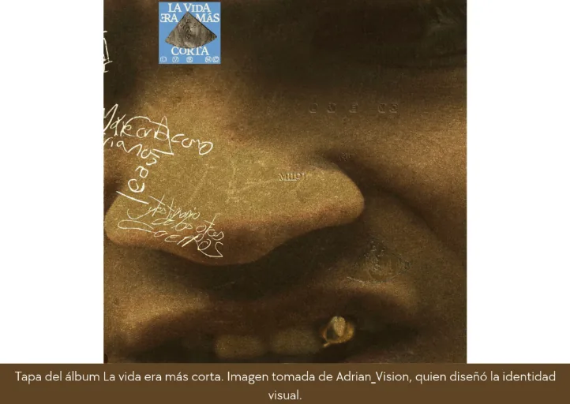
Uno de los aspectos más destacados de esta identidad es el trabajo tipográfico desarrollado por el diseñador Javier Unknos, en colaboración con Adrián Romero, de Talleres la Visión, responsable de dirigir la identidad visual del proyecto. Según explica Unknos en una entrevista publicada por TYPE01, la tipografía fue concebida a partir de una lectura del universo emocional del disco, atravesado por la memoria, la reflexión sobre el tiempo y la conciencia del presente (Weaver, 2026).
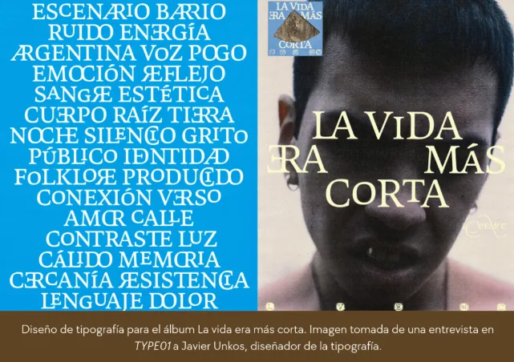
El diseñador partió de una tipografía propia denominada Academic, sobre cuya estructura desarrolló un sistema personalizado de letras, incorporando ligaduras, versalitas ubicadas a diferentes alturas y trazos ornamentales. Estas modificaciones permiten que las letras adopten distintas formas y movimientos, evitando una composición rígida o uniforme. De este modo, la tipografía adquiere un carácter expresivo que acompaña los ritmos y las variaciones de la música. Como señala Unknos, la intención fue que la tipografía no se limitara a identificar el álbum, sino que funcionara como una capa narrativa capaz de transmitir su atmósfera y su carga emocional (Weaver, 2026).
La identidad cromática también ocupa un lugar central en la construcción visual del proyecto. En una entrevista publicada por Rolling Stone en Español, Milo J explica que eligió el marrón como una representación del color de la Argentina: el tono de la tierra y del polvo, en contraste con el celeste de la bandera nacional.
Esta elección también puede leerse en relación con el mito del «crisol de razas», una narrativa que contribuyó a construir una imagen de la Argentina como una nación homogénea, blanca y europea, al mismo tiempo que invisibilizó la diversidad étnica y racial de su población. En este sentido, Adamovsky (2012) señala que «las élites que construyeron la nación argentina lo hicieron postulando que ella se encarnaba en un pueblo blanco-europeo» (p. 343). Frente a ese imaginario de la argentinidad, Milo J recupera el marrón como un signo de pertenencia e identificación con la tierra, el territorio y las raíces populares.
De este modo, la identidad visual del proyecto no solo propone una estética contemporánea que retoma elementos de lo tradicional, sino que también cuestiona los sentidos con los que históricamente se representó la identidad nacional. La afirmación de una identidad marrón adquiere así una dimensión simbólica y política: hace visible aquello que el relato de una Argentina blanca dejó en los márgenes.
Esta dualidad cromática, entre el marrón y el celeste, se convirtió en uno de los ejes simbólicos de la identidad visual del álbum y atraviesa tanto las portadas como los videoclips (Toro, 2025). La elección de estos colores permite establecer una relación entre el territorio, las raíces y la construcción de una identidad nacional, recuperando elementos asociados a lo popular y lo tradicional desde una estética contemporánea.
En este sentido, la identidad visual de La vida era más corta puede pensarse como una extensión de su propuesta artística: al igual que sucede con la música, no busca reproducir de manera idéntica los códigos del pasado, sino retomarlos y otorgarles nuevos sentidos. La tipografía, los colores y las distintas piezas gráficas conforman así un lenguaje visual propio, que acompaña la intención del artista de reconectar a las nuevas generaciones con sus raíces culturales sin renunciar a las formas de expresión del presente.
La “chapita” de la portada: memoria, materialidad y tradición
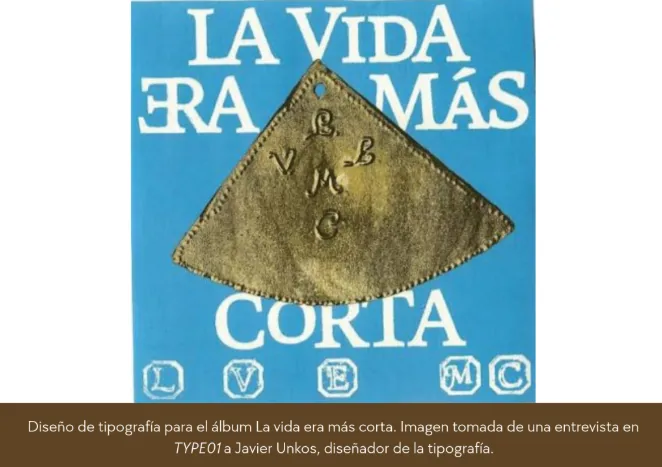
Otro elemento significativo de la identidad visual es la pieza metálica que ocupa el centro de la portada. Su presencia adquiere especial relevancia por el contraste que establece con el fondo celeste y las grandes letras blancas que componen el título del álbum. Se trata de una pieza de tonalidad dorada, con una silueta irregular, una perforación circular en el extremo superior y distintas inscripciones grabadas sobre su superficie. Su textura envejecida y sus marcas contribuyen a construir la apariencia de un objeto antiguo, cuya materialidad remite a otras épocas.
En una entrevista con Billboard, Milo explicó: “Yo soy marrón, el disco es marrón, el color secundario de Argentina es marrón. Latinoamérica es marrón. No me importa cómo usen ahora el término. Nunca le di bola a eso. Pero sí, el concepto de colorimetría y estética es el marrón con el metal. Por eso también me pego los dientes de oro, tengo los tajos en los outfits. Quería que el disco sea marrón oscuro y que refleje la tierra, el metal de la chapa vieja. Por eso el logo del disco vendría a ser un péndulo, que es casi un triángulo, y que tiene el mambo de medir el tiempo también. Un péndulo hecho de voto, que es joyería vieja, que es lo que le dejaban de ofrenda a los santos antes y eso lo hacían todo de plata. Hay toda una cuestión también histórica que tiene la estética del disco” (Ruiz, 2026).
Para profundizar en la interpretación del artista, es necesario definir que los exvotos de plata son piezas de platería popular que los fieles entregaban a las imágenes sagradas en agradecimiento o petición por un favor recibido, también conocidas como promesas o milagros. Las figuras toman forma de aquello que sea que desea sanar, proteger o agradecer.
En una nota de Página 12, Sergio Barbieri, investigador, fotógrafo y coleccionista de exvotos argentinos, advierte que “en Argentina se encuentran los mejores exvotos que existieron en Latinoamérica y también los más variados, más de 200 tipos” (Guzmán, 2015) . Los exvotos constituyen una manifestación de la religiosidad popular en la que convergen elementos de la tradición católica y de las creencias paganas. Asimismo, representan registros de las preocupaciones, los padecimientos y las inquietudes propias de cada época. A través de piezas artísticas, en su mayoría elaboradas por autores anónimos, estas ofrendas expresan experiencias humanas y vinculan el mundo espiritual con las vivencias cotidianas (Guzmán, 2015).
Esta concepción permite establecer un paralelismo con La vida era más corta, ya que el álbum no se limita a las vivencias personales de Milo J, sino que incorpora historias y experiencias ajenas, algunas anónimas, que trascienden su propia biografía. De esta manera, la obra se convierte en un espacio donde también encuentran expresión las dolencias y las inquietudes de otros, ampliando su dimensión individual hacia una experiencia colectiva.
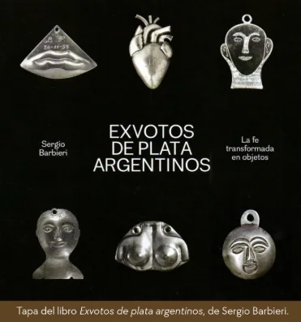
En resumen, esta lectura adquiere especial relevancia al relacionarla con la propuesta musical de Milo J, quien recupera sonidos, géneros y tradiciones del folklore argentino para ponerlos en diálogo con lenguajes musicales actuales. Así como en las canciones conviven referencias a la música popular tradicional con elementos del trap y otros géneros contemporáneos, la portada incorpora un objeto que evoca la materialidad de otras épocas dentro de una composición visual actual. De esta manera, la chapita puede entenderse como una expresión condensada de la operación cultural que atraviesa el álbum: recuperar elementos del pasado, traerlos al presente y otorgarles nuevos sentidos.
Capítulo 3
El folklore en imágenes: narrativas audiovisuales y nuevas escenas de circulación
La descolonización de la mirada consistiría en liberar
la visualización de las ataduras del lenguaje,
y en reactualizar la memoria de la experiencia como un todo indisoluble.
(Rivera Cusicanqui, 2015:23)
El mundo audiovisual de La vida era más corta amplía y profundiza los sentidos que atraviesan el álbum. Conformado por los videoclips, visualizers, el Tiny Desk y La Jangada, este conjunto de producciones, más que representar literalmente el contenido de cada canción, construye un entramado de imágenes que recupera espacios, prácticas y experiencias vinculadas con la cultura popular argentina.
La expansión audiovisual del universo Milo J
A. Videoclips y visualizers: mirar para entender la poesía de Milo J
A través de estas producciones audiovisuales, el cantante construye una identidad visual en la que los distintos relatos se conectan mediante la recurrencia de paisajes, personajes, objetos y elementos simbólicos. Uno de los aspectos más destacados es la elección de los escenarios. Los barrios, las calles de tierra, las viviendas humildes, los cementerios, las peñas, los caminos rurales y los paisajes naturales componen una geografía que remite a los territorios y las formas de vida populares. Se trata de espacios alejados de las representaciones urbanas asociadas al lujo o al consumo, en los que adquieren protagonismo las experiencias cotidianas, los vínculos comunitarios y las tradiciones heredadas. El paisaje no funciona únicamente como fondo de las historias, sino que contribuye a construir una identidad territorial y cultural que atraviesa el disco.
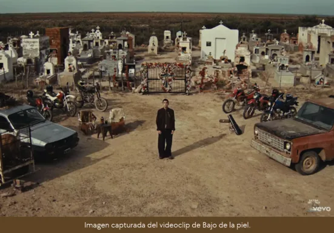
En este universo también se destaca la presencia de personajes que parecen representar experiencias colectivas antes que individualidades reconocibles. Niños, trabajadores, músicos populares, familias y personas que participan de reuniones o celebraciones conforman escenas en las que lo cotidiano adquiere centralidad. En varias de estas representaciones, los personajes aparecen serios, ensimismados o atravesados por cierta melancolía, incluso en situaciones que podrían asociarse con el encuentro y la celebración. Esta elección contribuye a construir una atmósfera en la que conviven la alegría, la nostalgia, el cansancio y el dolor. Asimismo, la aparición recurrente de niños permite establecer una relación entre distintas generaciones y recuperar la infancia como un momento fundamental en la construcción de la memoria y la identidad.
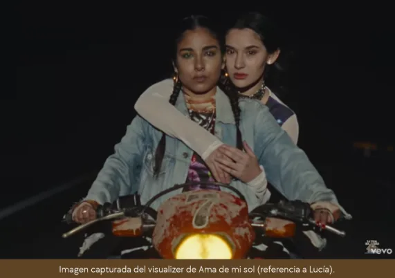
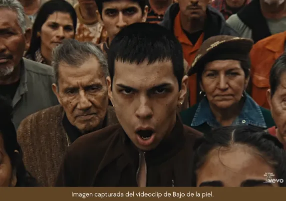
La muerte y la ausencia constituyen otros motivos recurrentes. Los cementerios, los ataúdes, las procesiones, las velas y los altares introducen referencias a la despedida y a las formas populares de vincularse con quienes ya no están.
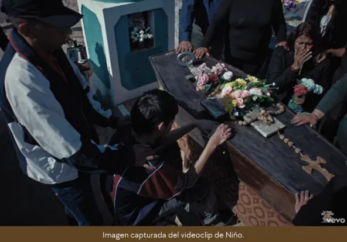
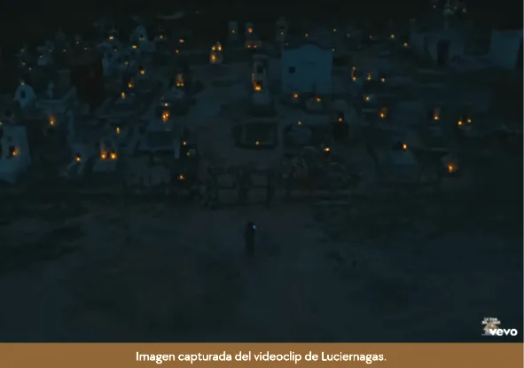
Estos elementos se articulan con símbolos de carácter religioso, como los rosarios y las imágenes de santos, que conviven con prácticas y objetos de la vida cotidiana. De esta manera, el universo audiovisual recupera expresiones de la religiosidad popular y las incorpora a relatos atravesados por la memoria, la pérdida y la espiritualidad.
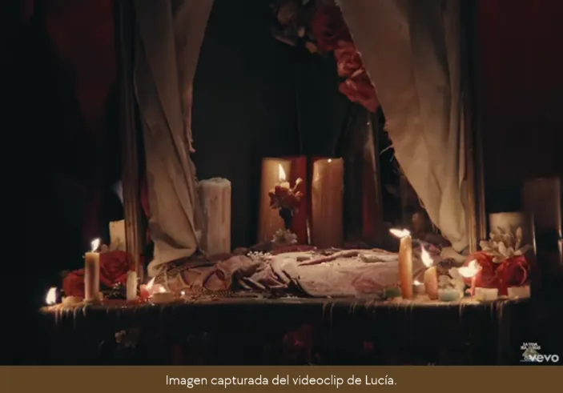
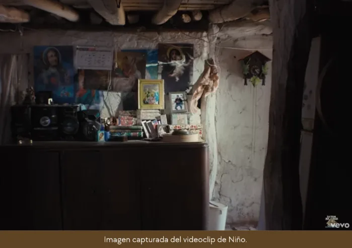
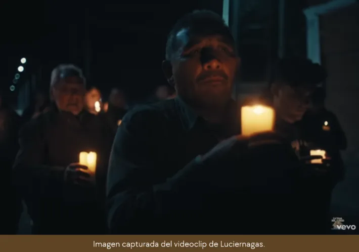
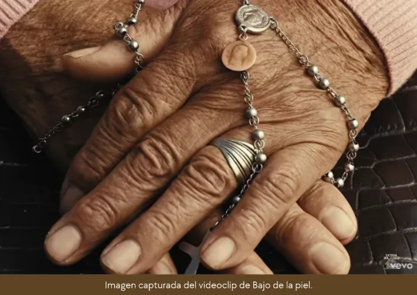
El fuego es, a su vez, uno de los elementos simbólicos que aparece con mayor insistencia. Se manifiesta en distintas situaciones y escenarios: en pequeñas llamas, objetos encendidos, árboles incendiados y hasta en una jangada que arde sobre el río. Su presencia admite diferentes lecturas, ya que puede asociarse tanto con la destrucción y la pérdida como con la transformación, la permanencia y la búsqueda de luz en medio de la oscuridad. En relación con otros elementos visuales, como las sombras, la noche y las tonalidades oscuras, el fuego introduce contrastes que refuerzan la tensión entre la vida y la muerte, la ausencia y el recuerdo.
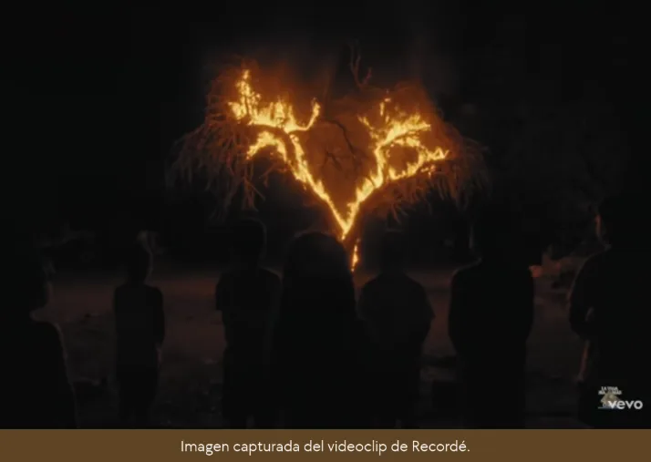
La dimensión estética también contribuye a la construcción de este universo. Predominan los ambientes nocturnos, las luces tenues, las sombras y las tonalidades terrosas y oscuras, aunque algunos visualizers incorporan colores más luminosos y saturados. La ropa, los objetos y los espacios refuerzan la referencia a una cultura popular y territorial: los ponchos, el mate, los instrumentos musicales, las motos, los elementos de trabajo y las construcciones humildes forman parte de una composición visual que recupera materiales y prácticas reconocibles de distintos contextos argentinos.
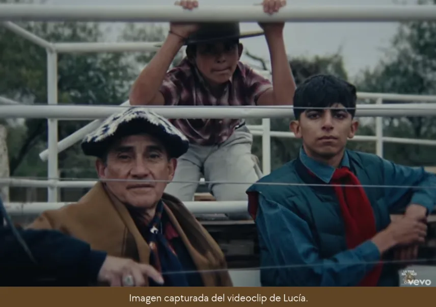
Por último, la continuidad entre las piezas audiovisuales se construye a partir de la reaparición de personajes y situaciones. Algunas figuras que aparecen en un videoclip vuelven a formar parte de otros relatos, lo que permite establecer conexiones entre canciones y reconocer que no se trata de producciones aisladas, sino de fragmentos de un mismo universo narrativo. Esta relación alcanza una dimensión particular en Jangadero, donde la presencia de Milo J en el inicio y el cierre del videoclip, junto con la aparición de niños que contemplan el fuego sobre el río, introduce una referencia a la transmisión generacional. Así, el recorrido audiovisual recupera algunos de los principales ejes conceptuales del álbum: la memoria, el paso del tiempo, la pérdida, la pertenencia y la continuidad de las experiencias culturales.
Esta continuidad puede vincularse con la noción de secuencia que desarrolla Rivera Cusicanqui en su sociología de la imagen: un modo de narrar que, a la manera de un storyboard, articula atmósfera, ritmo y metáforas en una alegoría, con algo de la polifonía de la música, y que expresa un modo de ver colectivo más que el talento narrativo de una sola persona (Rivera Cusicanqui, 2015). Los personajes que reaparecen, los objetos recurrentes y la geografía compartida entre los videoclips funcionan así como una alegoría colectiva de la memoria popular.
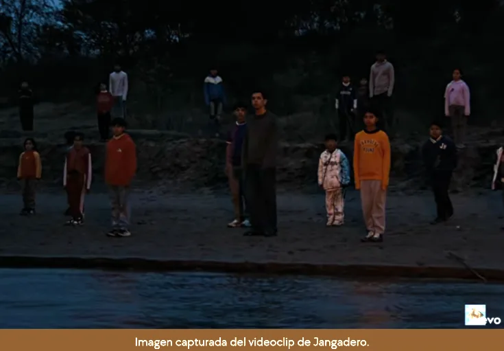
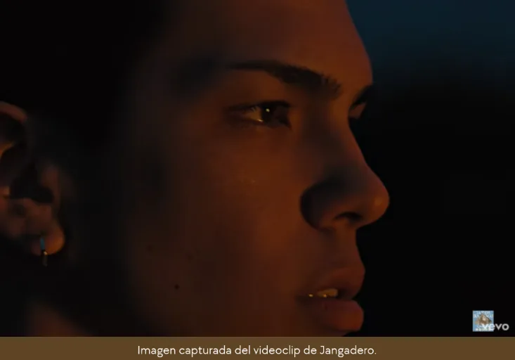
B. El Tiny Desk: de Sudamérica para el mundo
Por otro lado, el 30 de abril de 2026, Milo J estrenó su participación en el Tiny Desk Concert, el reconocido ciclo de sesiones musicales en vivo de NPR, la radio pública de Estados Unidos. Con 19 años, se convirtió en el artista argentino más joven en grabar en este formato. La presentación, que dura poco más de 16 minutos, reúne seis canciones: Recordé, Cuestiones, Solifican12, Bajo de la piel, Niño y Luciérnagas. La selección combina composiciones de La vida era más corta con Cuestiones, una canción que no formaba parte del álbum (Inzillo, 2026b).
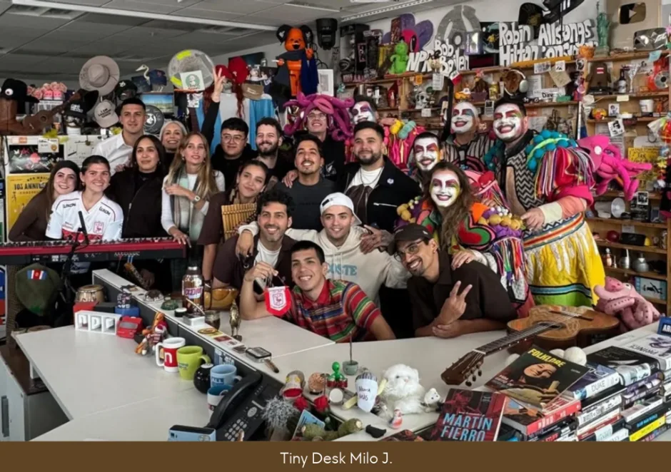
Milo está acompañado por un grupo de músicos con recorridos y formaciones diversas. La dirección musical está a cargo de Lautaro Fernández, quien también interpreta guitarra y charango. La banda se completa con Daniel Moreno, en guitarra; Santiago Alvarado, en teclados y melódica; Martín Beckerman, en percusión; y Tamara Meschller, en violín, flauta traversa y vientos andinos. A ellos se suma un coro integrado por integrantes de la murga uruguaya Agarrate Catalina: Yamandú Cardozo, Leonardo Gómez, Carolina Gómez, Eder Fructos y Martín Cardozo (Inzillo, 2026b).
La presencia de Agarrate Catalina es especialmente significativa porque no se trata de una colaboración ocasional. La murga ya había compartido escenarios con Milo J, incluso durante sus presentaciones en el estadio de Vélez Sarsfield. En esta oportunidad, sus voces y sus trajes coloridos aportan una sonoridad y una estética vinculadas con la tradición murguera rioplatense. Además, su participación se relaciona con Recordé, canción que ya incorporaba coros de murga en la versión del álbum. De esta manera, la sesión amplía una búsqueda musical que conecta distintas expresiones de la cultura popular latinoamericana (Inzillo, 2026b).
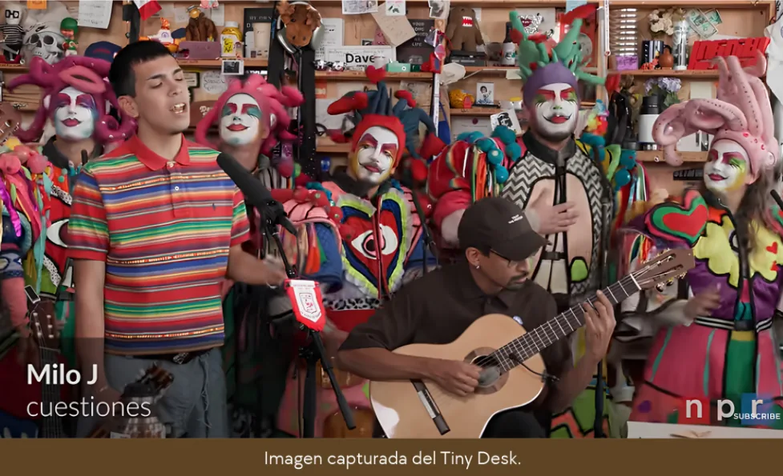
Entre los músicos también se destaca Tamara Meschller, cuya participación llamó la atención por su versatilidad instrumental. La artista interpreta instrumentos de distintas tradiciones, como el violín, la flauta traversa y los vientos andinos. Además, lleva puesto un poncho que Soledad Pastorutti le había regalado a Milo J durante el Festival de Cosquín. La prenda fue elegida para la presentación a partir de un pedido de Tamara, oriunda de Rafaela, Santa Fe, con la intención de representar también a su provincia. El objeto adquiere así un significado que trasciende el vestuario: reúne a dos generaciones de artistas vinculadas con la renovación y la transmisión del folklore argentino (Inzillo, 2026a).
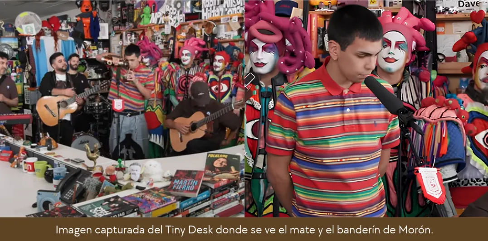
La escenografía es otro de los aspectos centrales de la presentación. A diferencia de una ambientación construida especialmente para la ocasión, los objetos que aparecen detrás de Milo provienen de su propia casa en Morón. Aldana Ríos, su madre y manager, estuvo a cargo de la dirección de arte y contó que vació bibliotecas y estantes familiares para seleccionar los elementos que viajarían a Estados Unidos. La intención era que la simbología fuera auténtica y estuviera vinculada con la historia cotidiana del artista. Todos esos objetos fueron trasladados en una valija hasta Washington (Inzillo, 2026a). Entre las piezas seleccionadas se encontraba también un mate que Milo dejó en los estantes del escritorio de NPR, junto a la copa de Sabrina Carpenter, que había quedado allí tras su participación en el ciclo. Así, un elemento cotidiano de la cultura argentina pasó a formar parte del espacio permanente del Tiny Desk.
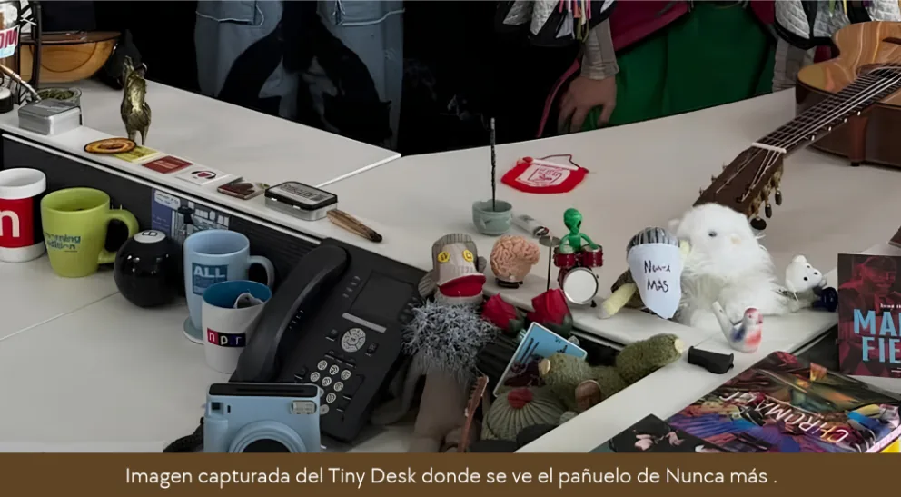
Dentro de los objetos exportados a Estados Unidos, se encuentra el banderín del Club Deportivo Morón, equipo del que Milo es hincha y al que ha acompañado como auspiciante. El detalle curioso es que el pequeño banderín permaneció colgado en el escritorio de NPR incluso después de la presentación: todavía podía verse durante el Tiny Desk de Foo Fighters, publicado algunas semanas más tarde. También aparece la bandera argentina, que, según reconstruye Inzillo (2026a), fue la primera en ocupar un lugar en las estanterías del estudio de NPR.
La puesta reúne, además, distintas referencias a la historia y la cultura nacional. Se pueden reconocer un ejemplar de Martín Fierro, un pañuelo de las Abuelas de Plaza de Mayo, una muñequita tejida con la inscripción Nunca Más, una chapa metálica con la representación de las Islas Malvinas y discos de Jorge Cafrune, Horacio Guarany y Mercedes Sosa. También se incluyó un suplemento de la revista Folklore de 1967, cuya portada tiene la imagen de Mercedes Sosa (Inzillo, 2026a).
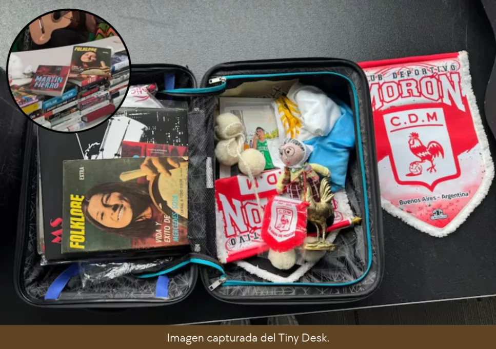
Algunos de estos elementos tienen historias particulares. El pañuelo de las Abuelas de Plaza de Mayo no es una reproducción: perteneció a Delia Giovanola, una de las doce fundadoras de la asociación, con quien la familia de Milo mantenía un vínculo afectivo. Por su parte, la pequeña muñequita tejida con la consigna Nunca Más fue un regalo de cumpleaños que Yamila Cafrune le hizo al artista. Este objeto establece, además, una conexión con el legado de Jorge Cafrune, padre de Yamila y figura fundamental del folklore argentino (Inzillo, 2026a).
Otro detalle significativo se encuentra sobre el teclado de Santiago Alvarado: una boina tejida con los colores de la bandera de Santiago del Estero. Su historia se remonta al rodaje del videoclip de Bajo de la piel, realizado en aquella provincia. Durante la filmación, el cuidador de un cementerio se acercó a Milo y le agradeció que su música contribuyera a recordar a las personas que habían vivido allí. La frase que le transmitió “Gracias a vos ahora nadie más se va a olvidar de que ellos existieron” emocionó al equipo. La boina quedó asociada a ese encuentro y a la memoria de los antepasados, especialmente significativa para Milo porque parte de su historia familiar también está vinculada con Santiago del Estero (Inzillo, 2026a).
La identidad visual de la presentación no se limita a la escenografía. El vestuario de Milo también incorpora referencias culturales. La prenda que utiliza fue intervenida por su hermana Alma, responsable de su estilismo, y combina una estética urbana con motivos textiles inspirados en los aguayos, tejidos tradicionales de la región andina. La elección dialoga con la búsqueda latinoamericanista que atraviesa La vida era más corta y con la recuperación de elementos culturales que forman parte de la identidad del artista (Inzillo, 2026b).
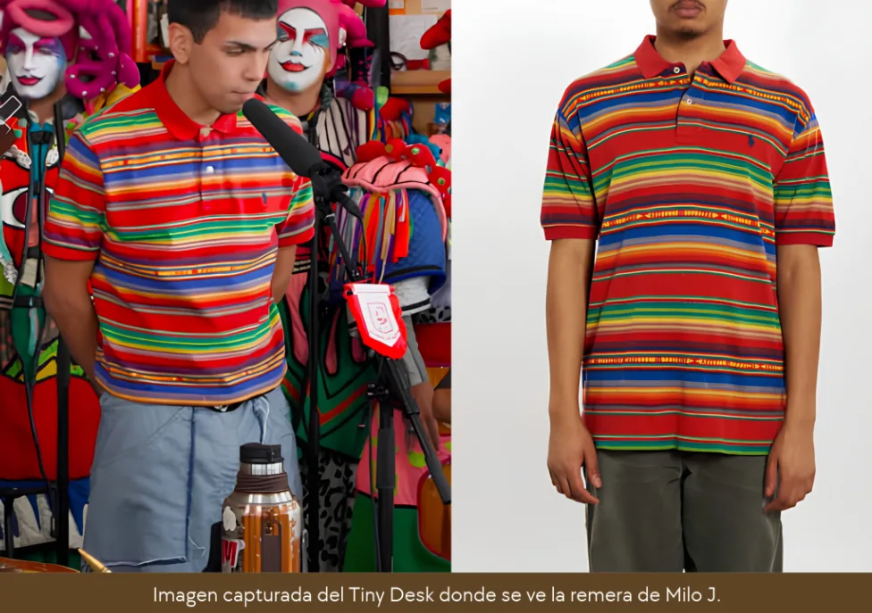
Los guiños musicales también aparecen en la ropa de los integrantes de la banda. Martín Beckerman, por ejemplo, lleva una remera de Los Gardelitos, mientras que el pantalón de Milo pertenece a la marca argentina 9mm. Su logotipo, una mira de tiro, funciona como un homenaje a la imagen de 2 Minutos, banda de punk argentino que formaba parte de la música que se escuchaba en el entorno familiar del artista. Además, los músicos llevan una escarapela abrochada en el lado del corazón. De este modo, el vestuario incorpora referencias que exceden al folklore y recuperan otras tradiciones de la música popular argentina (Inzillo, 2026a).
La realización del Tiny Desk implicó un proceso más extenso de lo que podría suponerse al ver el resultado final. La primera fecha estaba prevista para diciembre de 2025, pero debió postergarse por cuestiones vinculadas con la organización del viaje y los visados de los músicos y colaboradores. La segunda fecha, programada para fines de enero de 2026, también se suspendió debido a una ola polar que afectó a Washington y provocó el cierre del aeropuerto. Finalmente, la sesión pudo grabarse el lunes 16 de febrero de 2026, durante el fin de semana de Carnaval (Inzillo, 2026a).
En conjunto, el Tiny Desk de Milo J puede entenderse como una extensión audiovisual del universo de La vida era más corta. La presencia de músicos provenientes de distintas tradiciones, la participación de Agarrate Catalina, los instrumentos folklóricos, los objetos familiares y las referencias a figuras de la cultura argentina construyen una propuesta que articula pasado y presente. No se trata solamente de recuperar símbolos de la tradición, sino de incorporarlos a una expresión artística contemporánea y ponerlos en circulación ante nuevas audiencias.
Así, el escritorio de NPR se transforma simbólicamente en un espacio donde conviven la historia personal del artista, la memoria colectiva, las raíces familiares y distintas expresiones de la música popular argentina y latinoamericana. Milo no lleva únicamente sus canciones: lleva también parte de su casa, de su barrio y de las tradiciones con las que busca construir su identidad musical.
La escenografía del Tiny Desk invita además a una pregunta que Rivera Cusicanqui plantea para el folklore: ¿cuándo los símbolos populares funcionan como adorno y cuándo como reivindicación? La autora advierte que, en el Estado boliviano, la figura de lo indígena fue reducida a una visión ornamental y a una emblemática del folklore (Rivera Cusicanqui, 2015), que autorizaba una apropiación simbólica sin reconocimiento genuino de las colectividades de origen.
Ante un público estadounidense, el mate, el banderín, el Martín Fierro o los discos de Mercedes Sosa podrían leerse como una postal exótica. Sin embargo, los objetos descriptos por Inzillo (2026a) tienen historias concretas -el pañuelo perteneció a Delia Giovanola, una de las fundadoras de Abuelas de Plaza de Mayo; la boina remite al encuentro con el cuidador de un cementerio santiagueño- que los vinculan con memorias políticas y familiares específicas. Esta lectura es interpretativa: la crítica de la autora se dirige a un dispositivo estatal y se la utiliza aquí como pregunta para analizar la puesta, no como una afirmación suya sobre Milo J.
C. Los objetos del Tiny Desk como signos
Desde la perspectiva semiótica de Charles S. Peirce (como se cita en Marafioti, 2004), los objetos presentes en el Tiny Desk pueden analizarse según el tipo de relación que establecen con aquello que representan. El mate, el banderín del Club Deportivo Morón y el ejemplar del Martín Fierro funcionan principalmente como símbolos, ya que sus significados dependen de convenciones y códigos culturales compartidos por una comunidad. El pañuelo de las Abuelas de Plaza de Mayo y el poncho, en cambio, también pueden interpretarse como índices: ambos mantienen una conexión concreta con personas y acontecimientos particulares. Cabe señalar que estas categorías no son excluyentes: un mismo objeto puede funcionar simultáneamente como símbolo e índice.
Por otra parte, Stuart Hall (1980) plantea que el sentido de un mensaje no queda determinado exclusivamente por las intenciones de quien lo produce, sino que también se construye durante su recepción. En este proceso, las audiencias pueden realizar lecturas dominantes, negociadas u oposicionales, de acuerdo con sus propios marcos culturales y sociales. Aplicada al Tiny Desk, esta perspectiva permite considerar que los objetos pueden adquirir diferentes significados según los códigos desde los cuales son interpretados. Para quienes reconocen las referencias culturales argentinas, pueden remitir a prácticas cotidianas, pertenencias territoriales y memorias colectivas.
En cambio, para espectadores que no comparten esos códigos, algunos de estos elementos pueden resultar desconocidos o ser interpretados desde otros marcos de sentido. Incluso podrían leerse como representaciones de una identidad nacional construida para una audiencia internacional. De este modo, la pregunta por el uso decorativo del folklore no depende únicamente de la intención con la que se seleccionaron los objetos, sino también de las distintas condiciones y posibilidades de lectura que se ponen en juego durante su recepción.
Finalmente, la noción de semiosfera desarrollada por Iuri M. Lotman (1996) permite comprender el escritorio como un espacio de frontera entre distintos sistemas culturales. Para el autor, la frontera de la semiosfera funciona como un mecanismo de filtro y traducción, mediante el cual los mensajes procedentes de un sistema de signos pueden incorporarse y adquirir sentido en otro. Desde esta perspectiva, el Tiny Desk constituye un formato audiovisual de alcance global en el que ingresan elementos de la cultura argentina, tanto a través de los objetos como de las expresiones musicales. Estos elementos se incorporan a un nuevo contexto de circulación y significación, aunque su presencia también puede generar tensiones entre los códigos del formato y los sentidos culturales que portan.
Esta interpretación puede ponerse en diálogo con la noción de lo ch’ixi de Silvia Rivera Cusicanqui (2015), según la cual elementos diferentes y, en ocasiones, contradictorios pueden coexistir sin que sus particularidades se disuelvan en una síntesis homogénea. Así, el encuentro entre el formato global del Tiny Desk y las referencias culturales argentinas puede leerse como una convivencia entre sistemas de significación distintos, que mantienen sus particularidades aun cuando entran en contacto.
Cabe aclarar que la clasificación de los objetos como símbolos e índices constituye una propuesta analítica de este trabajo, al igual que la lectura del escritorio como un espacio de frontera semiótica. Estas herramientas permiten examinar cómo los elementos seleccionados participan en la construcción de sentidos y de qué manera la presentación articula referencias personales, culturales y colectivas.
D. La jangada: una celebración colectiva
La Jangada es una sesión/película musical de Milo J, lanzada el 30 de septiembre de este año para celebrar el primer aniversario de su álbum La vida era más corta. Una orquesta enorme que reúne distintas generaciones de artistas latinoamericanos que interpretan ocho canciones del disco.
Además de su lanzamiento digital, La Jangada tuvo funciones exclusivas en salas de cine de 14 países, entre ellos Argentina, Brasil, Chile, Colombia, Paraguay, México, Estados Unidos, España e Italia. En Buenos Aires, Milo J sorprendió al público al presentarse en una de las funciones realizadas en el Abasto. El 30 de septiembre de 2026, a las 21 h, la producción llegó a su canal oficial de YouTube y a las principales plataformas de streaming musical (Billboard Argentina, 2026).
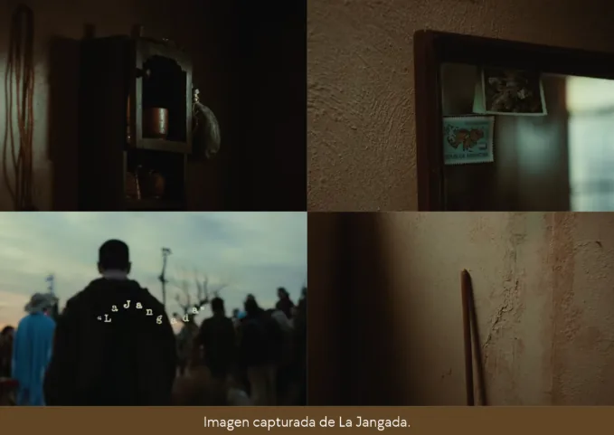
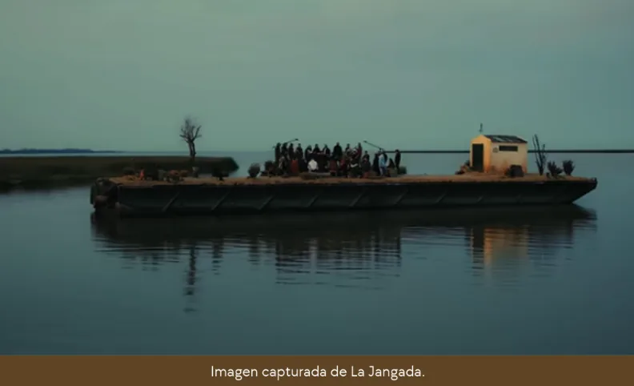
“La jangada es la unión de 35 músicos abrazados por la naturaleza con un objetivo en común: traer a la vida canciones que nacen desde el corazón de este país. En busca de la inmensidad que estas canciones transmiten, quisimos traer un pedazo de tierra de Santiago del Estero directo al Río de La Plata”, se lee en la descripción del video dirigido por Lucas Rosas y Manuel Pons.
El término jangada hace referencia a una balsa de grandes dimensiones, construida tradicionalmente mediante troncos unidos entre sí y utilizada para transportar madera río abajo. Los trabajadores que conducían estas embarcaciones eran conocidos como jangaderos. Se trataba de un oficio duro y riesgoso, vinculado con los ríos del Litoral argentino y de otros territorios de la región (Tiempo Argentino, 2026).
El nombre del proyecto tiene una relación directa con Jangadero, la canción de raíz litoraleña de Jaime Dávalos que cierra La vida era más corta, en la interpretación de Milo J junto a Mercedes Sosa. Por eso, el título recupera una referencia musical del álbum y, al mismo tiempo, una tradición vinculada con el paisaje y la historia del río Paraná.
Sobre uno de los brazos del río Luján, cerca de su desembocadura en el Río de la Plata, se despliega una escena tan inusual como onírica: un patio santiagueño, con piso de tierra y un pequeño rancho en la proa, que parece flotar en medio de un paisaje natural. Se trata de una escenografía construida sobre un remolcador de contenedores, transformado para dar lugar a este particular encuentro entre el paisaje fluvial y las tradiciones del norte argentino (Inzillo, 2026c).
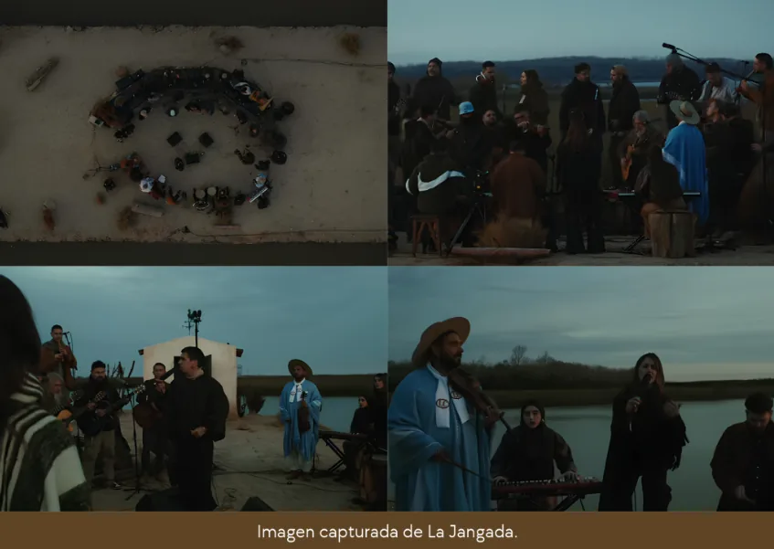
En esta propuesta que integra guitarras, violines, bombos legüeros, flautas, piano, bandoneón y contrabajo, participan músicos de la banda de Milo J, integrantes de Carafea y las voces de la murga uruguaya Agarrate Catalina. A ellos se suman artistas como Soledad Pastorutti, Trueno, Raly Barrionuevo, Mon Laferte, Cuti y Roberto Carabajal, Orellana Lucca y Lázaro Caballero.
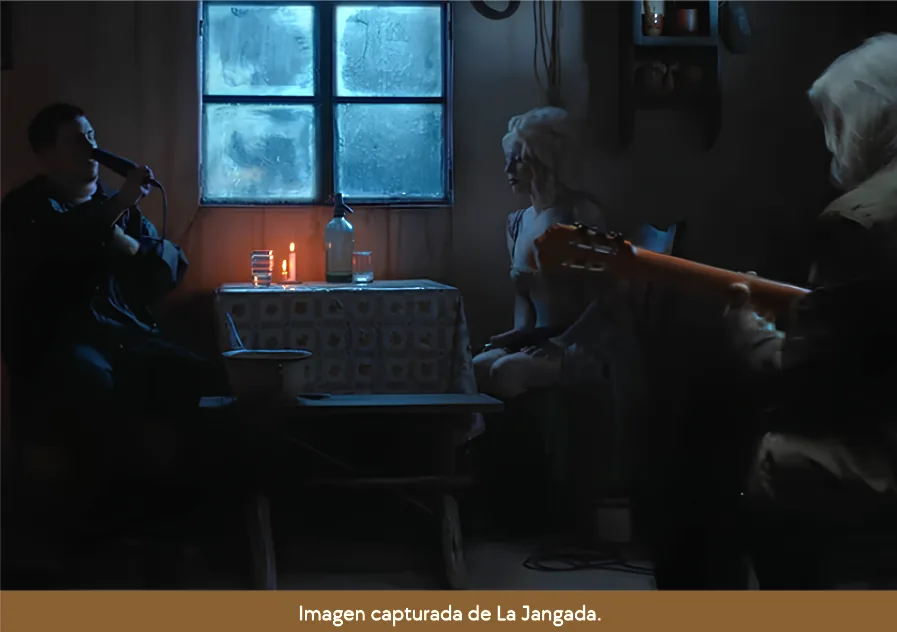
Más que una sucesión de colaboraciones individuales, la producción propone una reunión musical con clima de peña. En ella conviven intérpretes de distintas edades, procedencias y recorridos artísticos. Este encuentro permite poner en diálogo el folclore con otros géneros y expresiones contemporáneas, sin que las tradiciones musicales pierdan su protagonismo.
La selección de canciones también evidencia distintas formas de recuperar y actualizar el repertorio. En Lucía, Milo vuelve a compartir la interpretación con Soledad Pastorutti; Gil incorpora a Trueno; El Invisible, a Cuti y Roberto Carabajal; y Luciérnagas, a Raly Barrionuevo, quien interpreta las partes que en la versión original había grabado Silvio Rodríguez. De esta manera, las canciones adquieren nuevos matices a partir de las voces y los estilos de sus invitados (Inzillo, 2026c).
El recorrido concluye con Jangadero, la canción litoraleña que también cierra el álbum. En esta oportunidad, Milo J la interpreta junto a Mon Laferte, quien ocupa el lugar que en la grabación original correspondía a Mercedes Sosa. Su voz aporta una nueva sonoridad a la composición, con matices cercanos al bolero. La escena, desarrollada en el interior del pequeño rancho y con un clima más íntimo, funciona como cierre de la experiencia audiovisual.
Milo J y el paradigma clásico del folklore
A partir de la premisa de que Milo J realiza una profunda revitalización del folklore, en este análisis nos proponemos examinar qué elementos del paradigma clásico y sus ejes, planteados por Díaz (2006), se conservan intactos y cuáles sufren un proceso de reestructuración o ruptura. Retomando a Díaz y los ejes del paradigma clásico del folklore -el cual operaba como un dispositivo de control y exclusión que buscaba ordenar la identidad nacional bajo reglas rígidas, puristas y ancladas en un pasado mítico-, la propuesta de Milo J en La vida era más corta subvierte ese canon desde adentro. El artista utiliza las herramientas de la modernidad y la música urbana global para demostrar que la tradición no es una pieza de museo intocable, sino un organismo vivo que se reescribe, se hibrida y se resignifica permanentemente a través de las nuevas generaciones.
|
Ejes del paradigma clásico del folklore (Díaz, 2006) |
Definición del canon tradicional |
Propuesta en La vida era más corta, Milo J |
Tipo de relación |
|
Nacionalidad de los géneros |
Músicas regionales sistematizadas y cerradas como representación unívoca de "lo nacional". |
Hace convivir chacarera, chamamé, coplas andinas y zamba con rap, trap, murga uruguaya y candombe. Dialoga con artistas latinoamericanos (Violeta Parra, Silvio Rodríguez, Totó la Momposina). |
Ruptura / Convivencia (abre la frontera nacional hacia un cruce urbano y latinoamericano). |
|
El mito del “origen” |
Idealización de un pasado provinciano primigenio y añoranza por la "pérdida del pago" frente a la modernidad. |
El origen se ancla en el conurbano bonaerense (Morón) y las vivencias barriales contemporáneas, así como a costumbres propias del norte argentino. Recupera memorias heredadas y cantos originarios, pero como parte viva del presente, sin idealización pura. |
Ruptura/Resignificación (el "pago" se traslada al barrio y la memoria familiar). |
|
La lengua del folklore |
Estilización literaria de la lengua del gaucho con matices regionales prefijados. |
Utiliza la oralidad cotidiana de la calle, códigos juveniles urbanos y crudeza emocional, alternando jerga barrial con reflexiones existenciales sobre la finitud. |
Ruptura (despoja al género de la solemnidad literaria tradicional, aunque reutiliza frases y palabras de canciones antiguas). |
|
Objetivos privilegiados del discurso |
Descripción externa de paisajes, fiestas populares, ceremonias y costumbres como postal de la patria. |
El foco pasa a la subjetividad, la salud mental, el duelo y el paso del tiempo. Retrata oficios (jangaderos, cartoneros) y religiosidad popular para visibilizar heridas sociales, no como costumbrismo. Sin embargo, también comparte elementos clásicos como festividades folclóricas y vestimentas típicas. |
Desplazamiento (de la postal exterior a la experiencia íntima y la crítica social). |
|
Estrategia de enunciación |
El gaucho o provinciano cantor funciona como metonimia directa y exclusiva de la patria. |
Enuncia un joven urbano autogestivo ("un pibe de Morón") que actúa como puente transgeneracional. Combina estética urbana (dientes de oro, agujeros en la ropa) con aguayos andinos, poncho y la voz de referentes históricos (Mercedes Sosa, Soledad). |
Descentralización (reemplaza el arquetipo único del gaucho por una identidad ch’ixi y colectiva). |
|
Visión histórica del siglo XIX |
Historia congelada y legitimada únicamente en el siglo XIX (gestas gauchas, independencia, guerras civiles). |
Rechaza la historia fosilizada. Propone una polifonía temporal donde conviven el Martín Fierro y el exvoto antiguo con memorias recientes (pañuelo de Abuelas de Plaza de Mayo, Malvinas, estética Nunca Más en el Tiny Desk). |
Ruptura (incorpora la historia reciente, los derechos humanos y la materialidad del presente). |
El análisis de Díaz (2006) dialoga con la crítica que Rivera Cusicanqui (2015) dirige al folklore entendido como emblema estatal: en el caso boliviano, una visión ornamental que busca relegar lo indígena al museo y a un pasado remoto, y lo hace reaparecer en los márgenes de lo público bajo la forma de emblema folclórico. En ambos enfoques, el folklore clásico congela la tradición y la convierte en patrimonio fijo. La propuesta de Milo J se aleja de ese esquema en la medida en que se acerca a lo qhipnayra -el pasado como fuente viva- y a lo ch’ixi -diferencias que conviven sin fundirse-.
El folklore como puente generacional
Antes de la publicación de La vida era más corta, Milo J ya había comenzado a construir un vínculo más visible con la música de raíz folklórica a través de ¡FAlklore!, un ciclo surgido de una idea suya y desarrollado junto a Mex Urtizberea. La iniciativa nació a partir de la intención de crear un espacio que permitiera establecer un puente entre los grandes referentes del folklore argentino y las nuevas generaciones. Según explica Plaza (2025), el proyecto retomó el formato de ¡FA!, programa en el que se realizaban encuentros y homenajes a figuras fundamentales del rock nacional, para trasladar esa experiencia al universo de la música folklórica.
El ciclo se estrenó en YouTube el 20 de junio de 2025 y reunió a artistas de distintas generaciones y trayectorias en encuentros musicales y conversaciones alrededor de una mesa. Entre sus participantes estuvieron Teresa Parodi, Soledad Pastorutti, el Chaqueño Palavecino, Peteco y Cuti Carabajal, Chango Spasiuk, Maggie Cullen y Julián Kartún, entre otros. También participaron figuras vinculadas con otros ámbitos de la cultura popular, como el streamer Coscu. La diversidad de invitados permitió abordar el folklore desde diferentes experiencias y perspectivas, sin limitarlo a una definición única.
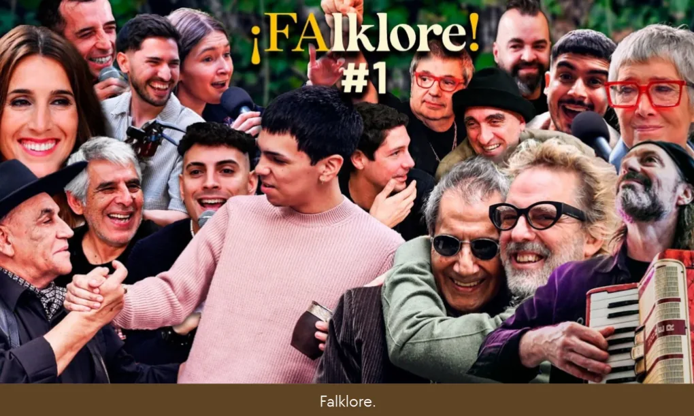
En este contexto, la participación de Milo J adquiere particular relevancia. El artista interpretó La pucha con el hombre, chacarera de Cuti Carabajal y Pablo Raúl Trullenque, y La taleñita, junto a Los Campedrinos. La primera versión alcanzó 2,4 millones de reproducciones en YouTube durante su primer mes, según los datos consignados por Plaza (2025).
La propuesta también tuvo una continuidad fuera del entorno digital. El 10 de agosto de 2025, ¡FAlklore! llegó al Movistar Arena con un formato en vivo, cuyas entradas se agotaron en dos horas. Para Plaza (2025), la repercusión del ciclo se vinculó especialmente con la circulación de videos entre usuarios jóvenes, que comenzaron a compartir sus propias versiones de las canciones presentadas. Así, el proyecto no solo recuperó un repertorio musical, sino que también impulsó nuevas formas de apropiación y participación alrededor de esas canciones.
El acercamiento de las nuevas generaciones al folklore también se manifiesta en la aparición de nuevos espacios de difusión y encuentro que se suman al histórico circuito del folklore argentino, constituido por festivales, peñas, medios de comunicación, etc. En este contexto, el streaming incorporó formatos más cercanos a los consumos digitales juveniles, combinando música en vivo, entrevistas y conversaciones con artistas.
Uno de los ejemplos es Bombo TV, canal de streaming creado el 9 de mayo de 2025 por el productor Gustavo Hoyle. Su propuesta busca modificar las formas habituales de presentar el folklore, incorporando una estética y una dinámica más cercanas a los consumos digitales contemporáneos. Conducido por la periodista mendocina Julieta Navarro y el músico Fabricio Rodríguez, el canal reúne a referentes consagrados y artistas emergentes. Sus contenidos también circulan mediante recortes y videos breves en redes sociales, algunos de los cuales superaron el millón de reproducciones (Barone, 2026).
Otra experiencia es Un Poco de Folclore, una propuesta incorporada a la programación del canal de streaming Un Poco de Ruido. Con la conducción de Julieta Pink, Juan Gigena Ábalos y Cachito Oquei, el ciclo recupera elementos característicos de las peñas tradicionales, como la música en vivo, las conversaciones alrededor de las canciones y las actuaciones acústicas. De esta manera, busca recrear el clima de estos encuentros populares mediante un formato de streaming y una dinámica más informal (El Destape, 2026).
A estos espacios se suma Folklore y Tradición, que comenzó como un portal de noticias y posteriormente incorporó transmisiones audiovisuales desde el Abasto Shopping, en Buenos Aires. Su particularidad es que el programa se realiza en un centro comercial, donde las personas que circulan pueden acercarse a escuchar a los músicos invitados e incluso sumarse a bailar. De esta manera, el streaming trasciende la pantalla y convierte un espacio comercial en una suerte de peña urbana (Barone, 2026).
La expansión de estos formatos también convive con la aparición de nuevos encuentros presenciales. Un ejemplo es República Folklore, un festival anunciado para el 21 y 22 de noviembre de 2026 en el Parque de la Ciudad de Buenos Aires, con más de cincuenta artistas distribuidos en distintos escenarios. Su programación reúne figuras de amplia trayectoria, como Soledad Pastorutti, Abel Pintos, Los Nocheros, el Chaqueño Palavecino, Peteco Carabajal y Teresa Parodi, junto con propuestas de distintas generaciones (Apicella, 2026).
También se destacan iniciativas como La Porteña, que propone combinar el formato tradicional de la peña con otros espacios de socialización nocturna. Sus organizadores identificaron una demanda de jóvenes que buscaban compartir el clima de estos encuentros, pero también incorporar otras experiencias musicales y de baile. En esta línea surgieron fiestas y ciclos como Sapucay, Grito de Fiesta, La Tincho Fierro y Tamarisco Bar, que articulan música folklórica, danza y otros géneros. Estas propuestas permiten observar que la peña continúa funcionando como espacio de encuentro, aunque sus dinámicas y públicos se amplían y transforman (Apicella, 2026).
Este movimiento también se expresa en la aparición y consolidación de artistas jóvenes que encuentran en las redes sociales nuevas formas de difusión. Una referente de esta nueva generación es Maggie Cullen, cantante que ganó visibilidad a partir de su participación en La Voz Argentina y que, junto a sus hermanas, construyó una trayectoria dentro del circuito folklórico.
Su propuesta combina la interpretación de repertorio tradicional con composiciones propias y colaboraciones con artistas de diferentes géneros. Según palabras de la cantante, algunos jóvenes llegan al folklore por haberlo vivido desde pequeños en sus hogares, mientras que otros se acercan desde la música urbana o indie y encuentran en las fusiones una puerta de entrada a esta tradición (Revello, 2025).
La participación juvenil no se limita a quienes desarrollan una carrera musical. También se observa en la circulación de videos de jóvenes que interpretan zambas, chacareras y otras expresiones folklóricas en redes sociales. Un ejemplo es Rodrigo Medina, un creador de contenido de 19 años que reúne más de 100.000 seguidores en Instagram a partir de publicaciones dedicadas al folklore argentino. En declaraciones recogidas por Frascini (2026), Medina señaló que cada vez encuentra más chicos interesados en aprender y compartir esta música.
Este acercamiento tiene su correlato en los espacios presenciales. Las peñas, los festivales y los encuentros universitarios y culturales convocan a jóvenes que se acercan no solo para escuchar música, sino también para bailar, cantar y participar de las guitarreadas. Sin embargo, es importante considerar que esta tendencia no se manifiesta de manera uniforme: mientras algunos organizadores identifican un crecimiento de la participación juvenil, otros señalan que la repercusión digital de ciertos fenómenos todavía no se traduce necesariamente en una mayor concurrencia a las peñas tradicionales (Frascini, 2026).
En conjunto, estas experiencias permiten reconocer que el folklore argentino atraviesa un proceso de expansión hacia nuevos espacios de circulación y participación. El streaming, las redes sociales, los festivales y las peñas funcionan como ámbitos complementarios en los que las nuevas generaciones pueden descubrir, interpretar y compartir este repertorio. Más que un fenómeno exclusivamente musical, se trata de una renovación de las formas de vincularse con una tradición cultural que encuentra en los consumos contemporáneos nuevas posibilidades de transmisión.
Cierre: una lectura ch’ixi y qhipnayra de Milo J
El recorrido de este capítulo permite sostener que la propuesta estético-musical de Milo J se comprende a partir de las categorías teóricas de Rivera Cusicanqui (2015). Por un lado, desde la perspectiva del qhipnayra, el folclore se proyecta hacia las nuevas generaciones como un pasado reversible que se reactualiza en la experiencia contemporánea de peñas, festivales y plataformas digitales. Por otro lado, la articulación de géneros heterogéneos (rap, trap, murga y folclore) se ajusta a la definición que la autora elabora sobre lo ch’ixi:
Es un modo de pensar, de hablar y de percibir que se sustenta en lo múltiple y lo contradictorio, no como un estado transitorio que hay que superar [...], sino como una fuerza explosiva y contenciosa [...]. Se opone así a las ideas de sincretismo, hibridez, y a la dialéctica de la síntesis, que siempre andan en busca de lo uno (Rivera Cusicanqui, 2015, p. 216).
Bajo esta premisa, las tensiones entre tradición y presente, así como la circulación de la escala local bonaerense en plataformas globales como el Tiny Desk, no se resuelven en una síntesis pacífica, sino que se habitan activamente desde la paradoja
En este sentido, se trata de una lectura posible y situada, no de la única ni de una descripción de las intenciones del artista. Conviene además sostenerla con cautela: no toda recuperación del folklore escapa al riesgo de convertirse en adorno, y el interés juvenil por la tradición no se manifiesta de manera uniforme (Frascini, 2026).
Capítulo 4
Plataformas digitales, consumos culturales y circulación del folklore en el Tecnoceno
Porque siempre queremos volver
A donde uno antes fue feliz
Y nos olvidamos que vivir
Es estar ahora, es estar aquí
- Milo J en Luciérnagas de La vida era más corta (2025)
Para comprender el alcance de la revitalización del folklore en la propuesta musical de Milo J, resulta necesario ampliar la mirada hacia las condiciones tecnológicas, económicas y culturales que intervienen en la producción, circulación y consumo de su música. En este sentido, el análisis no se limita a las características artísticas de La vida era más corta, sino que también considera el papel de las plataformas digitales y las transformaciones que éstas introducen en las formas contemporáneas de relacionarse con la música popular.
Las tecnologías digitales han adquirido una presencia cada vez más extendida en la vida cotidiana y participan de manera creciente en la organización de las relaciones sociales, económicas, culturales y políticas. En este escenario, las actividades cotidianas se encuentran cada vez más mediadas por dispositivos y entornos digitales, que registran, cuantifican y organizan distintos aspectos de la experiencia social. Flavia Costa (2021) denomina Tecnoceno a esta etapa histórica, caracterizada por la centralidad de las tecnologías digitales y su capacidad para transformar las condiciones en las que se desarrolla la vida contemporánea.
En este contexto, plataformas como Spotify y YouTube ocupan un lugar central en la organización de la experiencia musical. Estos servicios modificaron las formas de acceder a las canciones, descubrir artistas, construir recorridos de escucha y establecer vínculos con determinados géneros y tradiciones. De este modo, la circulación de la música se desarrolla en un entorno digital en el que intervienen plataformas, sistemas de recomendación, catálogos y prácticas de participación de los usuarios.
Estas transformaciones también plantean interrogantes sobre las formas contemporáneas de apropiación del folklore. La posibilidad de encontrar, compartir y escuchar producciones de distintas épocas y lugares amplía los modos de acercamiento a la música popular y permite que las nuevas generaciones establezcan vínculos con expresiones culturales que no necesariamente forman parte de sus experiencias directas. En este sentido, la recuperación de sonidos y repertorios tradicionales presente en La vida era más corta puede articularse con nuevas formas de consumo, en las que la memoria musical circula a través de contenidos digitales y adquiere significados en contextos diferentes de aquellos en los que se originó.
A continuación, lo que se busca lograr es comprender de qué manera las plataformas digitales participan en la circulación de La vida era más corta y cómo sus lógicas de funcionamiento se relacionan con las prácticas culturales de las nuevas generaciones.
Nostalgia, industrias culturales y consumos musicales
La relación entre nostalgia y música popular permite profundizar el análisis de las formas contemporáneas de revitalización del folklore. En su trabajo sobre los usos de la nostalgia en la música popular, Van der Hoeven (2018) aborda la nostalgia como un fenómeno socialmente construido, cuyos sentidos dependen de los contextos culturales e institucionales en los que se produce y circula. Desde esta perspectiva, la nostalgia musical no constituye únicamente una experiencia individual vinculada con recuerdos personales, sino que se define estructuralmente como “un anhelo del pasado que se evoca a través de la producción y el consumo de la música popular o de las representaciones de su historia y patrimonio” (Van der Hoeven, 2018, p. 238, traducción propia).
El autor sostiene que la música popular mantiene una relación estrecha con la construcción de identidades y sentidos de pertenencia. A través de canciones, símbolos, referencias históricas y elementos asociados con determinadas tradiciones, los artistas pueden recuperar imaginarios colectivos y establecer conexiones entre el pasado y el presente. En este sentido, como señala Van der Hoeven, “frente al cambio, la nostalgia puede ser un recurso significativo para que las personas mantengan un sentido de continuidad de sí mismas entre el pasado y el presente” (2018, p. 239, traducción propia). Esta dimensión resulta especialmente significativa para analizar La vida era más corta, ya que Milo J recupera expresiones del folklore argentino y referencias a figuras de su historia musical para incorporarlas a una propuesta contemporánea. De este modo, el álbum genera nuevas formas de identificación con una tradición musical entre públicos que no necesariamente tuvieron contacto directo con sus expresiones originales.
Esta relación introduce una tensión entre la recuperación de una tradición y su aprovechamiento comercial. La incorporación de referencias nostálgicas no implica necesariamente una reproducción superficial del pasado ni supone, por sí misma, una pérdida de valor cultural. Por lo tanto, resulta necesario examinar las condiciones concretas en las que se producen estas representaciones y los sentidos que adquieren para quienes las reciben. La mercantilización de la nostalgia no debe confundirse con cualquier manifestación de memoria musical, sino que refiere a los procesos mediante los cuales las industrias culturales seleccionan, organizan y convierten determinados elementos del pasado en bienes y experiencias de consumo.
Otro aspecto central del planteo de Van der Hoeven (2018) es que los relatos nostálgicos no tienen un significado único ni producen los mismos efectos en todos los públicos. El autor enfatiza que “los significados que la nostalgia tiene para las personas no pueden simplemente deducirse del análisis de las propias narrativas nostálgicas mediadas; estas narrativas son dotadas de sentido activamente por las audiencias en su vida cotidiana” (2018, p. 240, traducción propia). Las audiencias participan activamente en la interpretación de las representaciones del pasado y las relacionan con sus propias experiencias, conocimientos y pertenencias culturales. De esta manera, una misma canción puede despertar recuerdos personales en quienes la escucharon durante una etapa de sus vidas, mientras que para generaciones más jóvenes puede representar una nostalgia recibida (received nostalgia) (Bennett, 2008, citado en Van der Hoeven, 2018) respecto de una época que no vivieron directamente. Esta distinción permite comprender que la experiencia nostálgica no depende exclusivamente del recuerdo de un pasado vivido, sino que también puede construirse mediante relatos, imágenes, sonidos y dispositivos culturales transmitidos entre generaciones.
Esta perspectiva resulta relevante para comprender el acercamiento de las nuevas generaciones al folklore argentino a través de la propuesta de Milo J. En La vida era más corta, la recuperación de figuras como Mercedes Sosa, Horacio Guarani y Jaime Dávalos; y de composiciones vinculadas con la tradición folklórica permite poner en contacto distintas generaciones y construir nuevas formas de aproximación a ese repertorio.
Guerrero (2024) señala que, a medida que fue avanzando el siglo XXI, los cambios tecnológicos fueron aún más rápidos y los tiempos del Tecnoceno se hicieron más evidentes. Esto provocó que las prácticas de consumo se transformaran al ritmo de dichos progresos:
Los artistas y quienes formaban parte de la cadena productiva, se vieron necesitados de incluir sus músicas en las plataformas digitales, que les ofrecían a los usuarios un modelo de negocio distinto. En lugar de adquirir la música en algún soporte físico como hasta entonces (LP, casete, CD, DVD), la industria proporcionaba la venta de archivos digitales (iTunes, por ejemplo) para almacenar en algún dispositivo (computadora, tableta, teléfono móvil) o reproducciones y/o descargas a través de plataformas (Spotify, YouTube Music, etcétera). (Guerrero, 2024:200-201)
Para comprender estas dinámicas, resulta necesario considerar los procesos que caracterizan al Tecnoceno (Costa, 2021). Entre ellos, la datificación refiere a la transformación de distintos aspectos de la vida social en datos medibles; la digitalización, al pasaje de la información a formatos digitales; y la protocolización, a la creación de estándares tecnológicos que permiten conectar plataformas y organizar sus intercambios. A estos procesos se suman la vigilancia, mediante el monitoreo constante de las actividades de los usuarios, y la mercantilización, que convierte los datos y la atención en recursos económicos. En conjunto, estas operaciones modifican las condiciones en las que se producen, distribuyen y consumen los bienes culturales.
En el caso de la música, la datificación permite que las plataformas registren y cuantifiquen las prácticas de escucha mediante indicadores como las reproducciones, las búsquedas, las interacciones y los hábitos de consumo. Esta información alimenta sistemas de procesamiento de grandes volúmenes de datos (Big Data) que permiten analizar comportamientos, predecir preferencias y orientar las decisiones de los usuarios. Este funcionamiento puede vincularse con la noción de gubernamentalidad algorítmica, entendida como “un modo de ejercicio del poder que no solo es productivo antes que represivo, es decir, que produce realidad y subjetividad, sino que además se orienta sobre todo a conducir las conductas” (Costa, 2021:48).
La propuesta de Milo J permite observar, además, la tensión entre la recuperación de una memoria musical y las condiciones de circulación impuestas por el mercado digital. Su música puede alcanzar nuevos públicos mediante plataformas que registran las escuchas, analizan las preferencias y organizan la visibilidad de los contenidos. Sin embargo, esto no significa que la experiencia de escucha quede determinada por completo por los algoritmos: los usuarios también comparten canciones, recomiendan artistas y construyen sus propios recorridos de apropiación. Por lo tanto, la revitalización del folklore se produce en un escenario de relaciones entre las decisiones artísticas, las prácticas de las audiencias y las lógicas tecnológicas y comerciales de las plataformas.
Esta dimensión económica puede profundizarse a partir del concepto de capitalismo de plataformas, desarrollado por Nick Srnicek (2018). El autor sostiene que, en el capitalismo contemporáneo, los datos se convierten en una materia prima central para la generación de ganancias y la obtención de ventajas competitivas.
En este contexto, “las plataformas son infraestructuras digitales que permiten que dos o más grupos interactúen. De esta manera se posicionan como intermediarias que reúnen a diferentes usuarios” (Srnicek, 2018:45). Su funcionamiento se apoya, entre otros aspectos, en los efectos de red: cuanto mayor es la cantidad de usuarios que participan de una plataforma, mayor puede ser su valor para quienes la utilizan, lo que favorece la concentración del mercado.
Srnicek (2018) distingue cinco tipos de plataformas: publicitarias, de la nube, industriales, de productos y austeras. Esta clasificación permite reconocer que no todas obtienen ganancias del mismo modo. En particular, el autor identifica a Spotify como una plataforma de productos, ya que transforma la comercialización de un bien tradicional -la música- en la prestación de un servicio digital. En lugar de adquirir una copia física de un álbum, los usuarios acceden a un catálogo musical mediante una suscripción o a través de una modalidad gratuita financiada con publicidad. Por su parte, YouTube puede analizarse en relación con las plataformas publicitarias, cuyo modelo de negocio se basa en la extracción de datos de los usuarios y la comercialización de espacios publicitarios. Aunque sus modalidades de funcionamiento son diferentes, ambas intervienen en la circulación de producciones musicales y convierten las prácticas de consumo en oportunidades de generación de valor.
De esta manera, mientras el concepto de Tecnoceno permite comprender los procesos tecnológicos mediante los cuales la vida social y cultural se transforma en datos, el capitalismo de plataformas permite analizar cómo esos datos se incorporan a modelos de negocio orientados a la acumulación de ganancias.
En el caso de Milo J, la revitalización del folklore se desarrolla dentro de este escenario: las plataformas amplían las posibilidades de circulación y acceso a nuevas audiencias, pero también condicionan las formas de visibilidad y monetización de la música. De este modo, la recuperación de una tradición cultural se produce en un entorno en el que las prácticas de escucha participan, al mismo tiempo, de procesos de apropiación simbólica y de generación de valor económico.
El consumo de folklore en Argentina
Para dimensionar estas transformaciones en el contexto argentino, resulta pertinente recuperar los datos de la Encuesta Nacional de Consumos Culturales (ENCC), elaborada por el Sistema de Información Cultural de la Argentina (SInCA). Sus distintas ediciones (2013, 2017 y 2022) permiten observar las modificaciones en los hábitos culturales de la población y, particularmente, la creciente incorporación de las plataformas digitales a las prácticas de escucha musical (SInCA, 2023a). Sin embargo, es necesario señalar que la edición 2022/23 constituye el último relevamiento disponible hasta el momento. Dado que no se ha realizado una nueva edición desde entonces, sus resultados deben interpretarse teniendo en cuenta su distancia temporal y no como una descripción plenamente actualizada de los consumos culturales en Argentina.
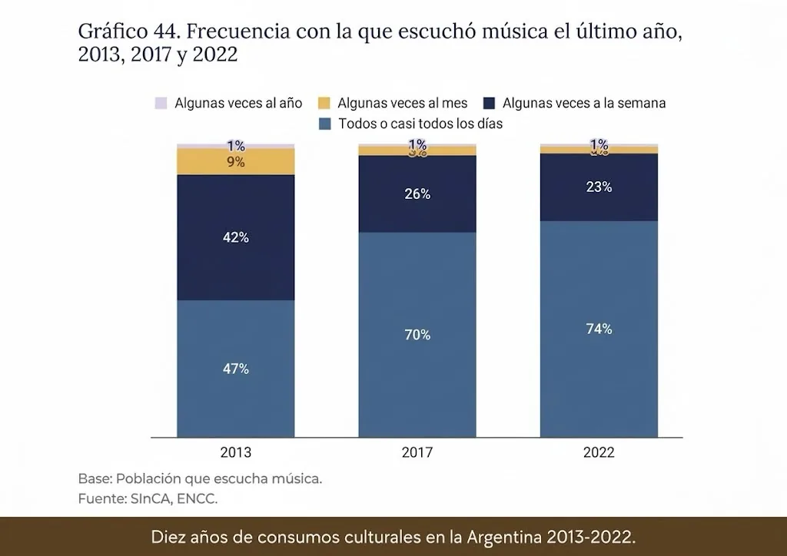
Ver datos: frecuencia de escucha (2013–2022)
| Frecuencia | 2013 | 2017 | 2022 |
|---|---|---|---|
| Todos o casi todos los días | 47% | 70% | 74% |
| Algunas veces a la semana | 42% | 26% | 23% |
| Algunas veces al mes | 9% | 3% | 1% |
| Algunas veces al año | 1% | 1% | 1% |
Fuente: SInCA, ENCC. Base: población que escucha música.
De acuerdo con la ENCC 2022, el 96% de la población escuchó música durante el último año, mientras que el 80% lo hizo a través de internet. El teléfono celular se consolidó como el principal dispositivo de escucha, utilizado por el 76% de las personas encuestadas. En cuanto a las plataformas, YouTube ocupa el primer lugar, con un 73% de uso, seguido por Spotify, con un 32%, y TikTok, con un 11% (SInCA, 2023b). Estos datos permiten dimensionar la centralidad que adquirieron las infraestructuras digitales en el acceso y la circulación de la música en Argentina, aunque deben leerse en el marco temporal del relevamiento.
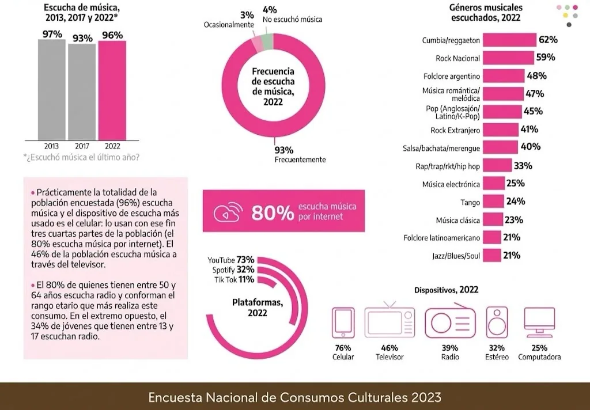
Ver datos: distribuci?n por g?nero (ENCC 2023)
| G?nero | Porcentaje |
|---|---|
| Cumbia / Reggaet?n | 62% |
| Rock nacional | 59% |
| Folklore argentino | 48% |
| M?sica rom?ntica / mel?dica | 47% |
| Pop | 45% |
Fuente: SInCA, ENCC 2023. Base: poblaci?n que escucha m?sica.
La encuesta también aporta información relevante sobre las preferencias musicales de la población. En 2022, la cumbia y el reggaetón encabezaron las preferencias, con un 62%, seguidos por el rock nacional, con un 59%, y el folklore argentino, con un 48% (SInCA, 2023b). Este último dato resulta significativo para la presente investigación, ya que permite reconocer que el género conserva una presencia importante entre los consumos musicales de la población, aun en un escenario atravesado por la expansión de las plataformas digitales y la diversificación de las ofertas musicales.
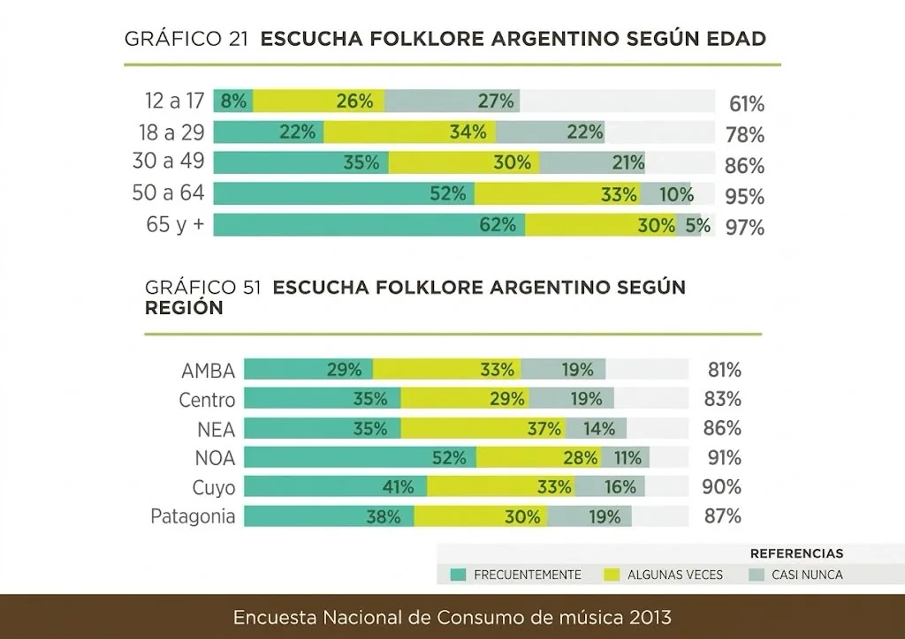
Ver datos: escucha por edad y región (ENCC 2013)
| Categoría | Porcentaje |
|---|---|
| 12–17 años | 61% |
| 18–29 años | 78% |
| 30–49 años | 86% |
| 50–64 años | 95% |
| 65 años o más | 97% |
| AMBA | 81% |
| Centro | 83% |
| NEA | 86% |
| NOA | 91% |
| Cuyo | 90% |
| Patagonia | 87% |
Fuente: SInCA, ENCC 2013. Base: población encuestada.
A estos datos se suma un indicador específico sobre la participación de las nuevas generaciones en el consumo de folklore. Según un informe de Spotify (como se citó en Frascini, 2026), uno de cada tres oyentes de folklore argentino en el país tiene menos de 30 años. El mismo informe señala que las reproducciones de este género crecieron un 85% entre 2020 y 2025, mientras que, si se considera la última década (2015-2025), el incremento alcanza el 1.645%. Asimismo, registra más de 16,5 millones de playlists creadas por usuarios que incluyen folklore argentino, desde repertorios clásicos hasta propuestas contemporáneas (Frascini, 2026).
En este escenario de expansión del consumo musical digital, resulta pertinente observar la circulación específica de La vida era más corta en las plataformas. Según los registros de Kworb y StreamClout, al 15 de noviembre de 2026 (un año después de su estreno), el álbum acumulaba aproximadamente 1.180 millones de reproducciones en Spotify, distribuidas entre sus quince canciones (Kworb, 2026c; StreamClout, 2026).
Entre las canciones más escuchadas se destacan Niño, con aproximadamente 255 millones de reproducciones; Gil, en colaboración con Trueno, con 176 millones; y Bajo de la piel, con 104 millones. Le siguen Solifican12, con 94 millones, y Luciérnagas, con 86 millones (StreamClout, 2026). La distribución de las reproducciones muestra, además, diferencias significativas entre las canciones que integran el álbum, ya que las tres primeras concentran una proporción importante del total de escuchas.
En YouTube, las visualizaciones de los videos y visualizers oficiales también permiten dimensionar la circulación de algunas de las canciones. Al 14 y 15 de noviembre de 2026, Niño superaba los 101 millones de visualizaciones (Kworb, 2026d), Gil alcanzaba aproximadamente 59,7 millones (Kworb, 2026b) y Bajo de la piel registraba alrededor de 50,7 millones (Kworb, 2026a). A diferencia de Spotify, no se dispone de un registro público consolidado que permita sumar las visualizaciones de todas las canciones y sus distintas versiones audiovisuales para obtener un total del álbum en esta plataforma.
Estos indicadores permiten observar la magnitud de la circulación digital de La vida era más corta y la diversidad de recepción de las canciones que lo componen. Asimismo, evidencian que una producción musical que retoma elementos del folklore argentino puede alcanzar millones de reproducciones en las principales plataformas de streaming y video. En este sentido, las estadísticas no solo dimensionan el alcance de la obra, sino que también permiten situar su propuesta de revitalización del folklore dentro de las dinámicas contemporáneas de circulación y consumo musical.
La repercusión de La vida era más corta también se manifestó en el reconocimiento obtenido dentro de la industria musical nacional e internacional. En la edición 2026 de los Premios Gardel, Milo J se consagró como el máximo ganador de la ceremonia, con 12 estatuillas, incluido el Gardel de Oro por el álbum (CAPIF, 2026; Rolling Stone en Español, 2026a). La producción también fue distinguida en las categorías Mejor Álbum Conceptual e Ingeniería de Grabación. Si se contempla además el reconocimiento al proyecto FAlklore Vol. 1 y 2, realizado junto a Mex Urtizberea, el artista alcanzó un total de 13 premios en esa edición (Rolling Stone en Español, 2026a).
En el plano internacional, Milo J obtuvo cuatro Latin Grammy en 2026. Dos de ellos reconocieron directamente a La vida era más corta, que ganó en las categorías Mejor Álbum Folclórico y Mejor Diseño de Empaque. Los otros dos correspondieron a canciones del disco: Niño, distinguida con Grabación del Año, y Gil, junto a Trueno, premiada como Mejor Interpretación Urbana (The Latin Recording Academy, 2026; Rolling Stone en Español, 2026b). Estos galardones dan cuenta del reconocimiento alcanzado por una propuesta musical que recupera y resignifica elementos del folklore argentino, tanto en categorías vinculadas con la tradición folclórica como en otros ámbitos de la industria musical contemporánea.
En conjunto, el recorrido por las condiciones tecnológicas, económicas y culturales de producción, circulación y consumo permite comprender que la revitalización del folklore impulsada por Milo J no ocurre de manera aislada, sino en un ecosistema atravesado por las plataformas digitales y las lógicas del capitalismo contemporáneo. La masividad alcanzada por La vida era más corta, junto con su reconocimiento en la industria musical nacional e internacional, evidencia que el folklore puede adquirir nuevas formas de circulación, apropiación y legitimación. Así, su propuesta no supone un retorno al pasado, sino una forma de recuperar elementos de la tradición y resignificarlos en las condiciones culturales y tecnológicas del presente.
Conclusión
Reflexiones finales y posibles líneas de investigación
Comprender la revitalización del folklore argentino a partir de la propuesta musical de Milo J requiere situarla en un escenario atravesado por transformaciones tecnológicas, económicas y culturales que inciden en las formas de producir, distribuir y consumir música. Por ello, es necesario recordar que este recorrido no se detiene únicamente en las dimensiones artísticas de La vida era más corta, sino que también busca dar cuenta del papel que desempeñan las plataformas digitales en la configuración de las prácticas musicales contemporáneas y en las maneras en que las audiencias se vinculan con la música popular.
A lo largo de este recorrido, la revitalización del folklore argentino a través de la propuesta de Milo J permite reflexionar sobre la relación entre tradición, tecnología y cultura contemporánea sin caer en una mirada determinista o apocalíptica sobre los entornos digitales. Desde una postura dualista, suele interpretarse que la lógica algorítmica, la estandarización del streaming y la fragmentación de las redes sociales vacían de sentido las tradiciones populares o las reducen a productos descartables del mercado. Sin embargo, las tecnologías de comunicación no son dispositivos puramente exteriores que se imponen sobre la cultura, sino espacios atravesados por tensiones en los que los sectores populares también logran inscribirse, negociar sentidos y habilitar nuevas formas de sociabilidad y transmisión generacional.
En este sentido, los aportes de Jesús Martín-Barbero (1987) permiten desplazar la mirada desde el mediacentrismo tecnológico hacia las mediaciones culturales, para comprender cómo las juventudes se vinculan con La vida era más corta dentro del ecosistema digital. Tal como señala el autor, retomando a García Canclini, “no se trata sólo de medir la distancia entre los mensajes y sus efectos, sino de construir un análisis integral del consumo, entendido como el conjunto de los procesos sociales de apropiación de los productos” (Martín-Barbero, 1987:231). Desde esta perspectiva, el consumo musical no puede entenderse únicamente como una escucha pasiva determinada por los algoritmos, sino como una práctica activa en la que intervienen las experiencias, los saberes y las competencias culturales de los públicos.
En el caso de La vida era más corta, géneros contemporáneos como el trap y el rap funcionan como estrategias de comunicabilidad que acercan a las juventudes a sonoridades y referencias tradicionales. A su vez, la circulación del álbum en Spotify, YouTube y redes sociales evidencia que las plataformas no solo operan como canales de distribución, sino también como espacios de apropiación y producción de nuevos sentidos. En este proceso, ciclos de streaming como ¡FAlklore! y Bombo TV amplían las posibilidades de encuentro con el folklore y recuperan, en un entorno digital, ciertas formas de cercanía y sociabilidad asociadas al barrio y la peña. De este modo, el consumo en pantalla puede desbordar hacia otras prácticas, como la producción de versiones propias en redes sociales, la asistencia masiva a recitales y la revitalización de encuentros presenciales.
A modo de cierre, y retomando los interrogantes que dieron origen a esta investigación —si el folklore realmente se fue, si volvió o qué explica su capacidad de convocar a las nuevas generaciones—, el camino realizado hasta aquí permite proponer que su revitalización no constituye un acontecimiento aislado, sino que forma parte de una dinámica cíclica de la historia cultural argentina. Los antecedentes del Movimiento del Nuevo Cancionero en la década de 1960 y del denominado folklore joven en los años noventa permiten reconocer cómo, en distintos momentos, nuevas generaciones recuperaron elementos de la tradición y los actualizaron de acuerdo con las sensibilidades y los lenguajes de su época. En este sentido, más que pensar estos procesos como regresos idénticos, resulta pertinente comprenderlos como nuevas etapas de visibilización, apropiación y resignificación.
Sin embargo, el resurgimiento actual presenta características particulares. Esta investigación propone pensar que la búsqueda de las raíces y de aquello que se reconoce como propio adquiere nuevos sentidos en un contexto global atravesado por el Tecnoceno, en el que las prácticas de consumo cultural se encuentran cada vez más digitalizadas, datificadas y mediadas por las plataformas. Frente a la circulación acelerada de contenidos y a la estandarización de los consumos culturales, la música de raíz folklórica puede funcionar como un anclaje territorial y afectivo, una forma de recuperar memorias, construir pertenencias y reafirmar vínculos con una historia compartida.
Desde esta perspectiva, el pasado no desaparece ni permanece intacto: continúa presente y se transforma a partir de los elementos, lenguajes y estéticas de cada época. La obra de Milo J y otras expresiones de la escena contemporánea permiten observar que la tradición no constituye una pieza estática de museo, sino una materia viva que adquiere nuevos sentidos al entrar en contacto con géneros como el rap y el trap, las estéticas urbanas y los soportes tecnológicos actuales. Revitalizar, entonces, no significa reproducir una tradición sin modificaciones, sino volver sobre ella para reinterpretarla desde las experiencias del presente.
A esta dinámica se suma una dimensión transgeneracional que resulta central para comprender el fenómeno. El encuentro entre distintas épocas, materializado en la confluencia de referentes históricos, artistas consagrados y nuevas voces, construye puentes entre generaciones y permite que las memorias culturales circulen y se actualicen. De este modo, el folklore se configura no solo como un repertorio musical heredado, sino también como un espacio de memoria colectiva, pertenencia y creación, en el que las nuevas generaciones pueden reconocerse y escribir sus propias formas de continuidad con el pasado.
No obstante, este trabajo también abre nuevos interrogantes que exceden sus objetivos y que podrían orientar futuras investigaciones. En primer lugar, cabe preguntarse por las motivaciones que impulsan a distintos artistas a incorporar elementos del folklore en sus producciones: ¿se trata de una búsqueda genuina de conexión con las raíces y las memorias culturales, de una decisión estética, de una oportunidad dentro de la industria musical o de una combinación de estos factores? Esta pregunta permitiría profundizar en las tensiones entre apropiación cultural, autenticidad y estrategias de posicionamiento dentro de las industrias culturales.
Asimismo, resulta necesario ampliar la mirada sobre el lugar que ocupan las mujeres en las renovaciones contemporáneas del folklore. En este punto, la comparación entre la recepción de La vida era más corta, de Milo J, y Latinaje, de Cazzu, podría abrir una línea de análisis sobre las condiciones desiguales de reconocimiento, legitimación y visibilidad de las propuestas artísticas. ¿Qué factores intervienen en que dos producciones que recuperan y resignifican elementos de la música popular latinoamericana obtengan distintos niveles de repercusión? ¿Qué lugar ocupan las relaciones de género en los procesos de consagración dentro de la industria musical?
Por otra parte, las distintas olas de revitalización del folklore argentino —así como los ciclos de renovación de otros géneros musicales— invitan a preguntarse por su dimensión política. ¿Pueden estos movimientos interpretarse como respuestas culturales a determinados contextos sociales, económicos y políticos del país? ¿De qué manera las crisis, las transformaciones de la identidad nacional y las búsquedas de pertenencia inciden en el regreso de ciertos sonidos, relatos y símbolos? Indagar en estas relaciones permitiría comprender las revitalizaciones musicales no solo como fenómenos estéticos o comerciales, sino también como formas de expresión de sensibilidades colectivas situadas históricamente.
A su vez, la reflexión sobre la identidad cultural latinoamericana habilita una perspectiva decolonial para pensar los modos en que se construyen y circulan nuestras expresiones musicales. En una entrevista, Milo J plantea que buena parte de la cultura latinoamericana se fue configurando a partir de la necesidad, de las condiciones históricas y de los encuentros entre distintas tradiciones (Elizalde, 2026). Esta idea invita a revisar las categorías desde las cuales se define qué es lo propio, lo legítimo o lo tradicional, y a cuestionar la centralidad de los circuitos culturales eurocéntricos y anglosajones como parámetros de reconocimiento. Desde esta perspectiva, sería pertinente profundizar en cómo las músicas latinoamericanas construyen sus propios lenguajes, recuperan sus memorias y generan espacios de circulación y legitimación.
Finalmente, otra posible línea de investigación se relaciona con la dimensión visual del folklore, particularmente con los vestuarios y las representaciones estéticas asociadas al género. Analizar cómo se construyen, reproducen y transforman estos elementos permitiría indagar en el modo en que la vestimenta participa de la definición de una identidad folklórica, así como en las tensiones entre los imaginarios tradicionales y las nuevas formas de representación.
Para concluir este trabajo, queríamos destacar esta investigación también significó un proceso de reconexión con nuestra propia cultura. A través de los elementos con los que Milo J buscó reencontrarse —las memorias familiares, el barrio, los símbolos, las figuras de nuestra historia y las expresiones musicales que forman parte de nuestra identidad—, nosotras también volvimos la mirada hacia aquello que nos constituye. El recorrido nos permitió reconocer con mayor profundidad el valor de nuestra historia cultural, sentir orgullo por sus expresiones y, al mismo tiempo, cuestionar algunos de los sentidos y relatos desde los cuales aprendimos a interpretarla.
En ese camino, también revalorizamos la nostalgia, no como una simple añoranza de lo que pasó, sino como una posibilidad de volver sobre el pasado para comprender el presente y construir nuevos sentidos. La escucha y el análisis de las canciones nos sensibilizaron frente a la música y nos acercaron a historias, sonoridades y tradiciones que, en muchos casos, conocíamos de manera fragmentaria. El trabajo adquirió así una dimensión que excedió el análisis comunicacional: implicó una búsqueda cercana a la experiencia antropológica, en la que observar, escuchar, indagar y reinterpretar los símbolos nos permitió acercarnos a las prácticas y los sentidos que hacen del folklore una expresión viva.
Esta reconexión también se volvió evidente al pensar las distintas generaciones que protagonizaron los sucesivos momentos de revitalización del folklore argentino. En nuestra propia historia familiar, esos ciclos dejaron de ser solamente períodos históricos: en los años sesenta, nuestros abuelos transitaban sus veinte años; en los noventa, lo hacían nuestros padres; y hoy somos nosotras quienes atravesamos esa misma etapa, en un nuevo momento de acercamiento de las juventudes al género.
Por último, el recorrido nos permitió reconocer que la música no solo transmite memorias o expresa identidades: también construye comunidad. En las canciones, los encuentros, las plataformas digitales y las experiencias compartidas se producen vínculos que conectan trayectorias individuales con memorias colectivas. Quizás allí resida una de las reflexiones más significativas que nos deja esta investigación: reconectar con el folklore no implica únicamente recuperar algo del pasado, sino encontrar en él nuevas maneras de reconocernos, encontrarnos y construir un sentido de pertenencia en el presente.
Referencias bibliográficas
Adamovsky, E. (2012). El color de la nación argentina: Conflictos y negociaciones por la definición de un ethnos nacional, de la crisis al Bicentenario. Jahrbuch für Geschichte Lateinamerikas, 49, 343–364. https://doi.org/10.7767/jbla.2012.49.1.343
Anderson, B. (1993). Comunidades imaginadas: Reflexiones sobre el origen y la difusión del nacionalismo (E. L. Suárez, Trad.). Fondo de Cultura Económica.
Angenot, M. (2010). El discurso social: Los límites históricos de lo pensable y lo decible. Siglo Veintiuno Editores.
Apicella, M. (2025a, 25 de septiembre). Milo J: el cantante que trasciende su generación y acelera a fondo sin olvidarse de su pasado. LA NACIÓN. https://www.lanacion.com.ar/espectaculos/milo-j-el-cantante-que-trasciende-su-generacion-y-acelera-a-fondo-hacia-adelante-mirando-el-pasado-nid25092025/
Apicella, M. (2026b, 12 de octubre). El boom del folklore en Buenos Aires: grandes festivales, streaming, peñas y una tendencia que sigue en alza. LA NACIÓN.
Banco Central de la República Argentina. (2011). Museo Histórico y Numismático Dr. José Evaristo Uriburu (H). https://www.bcra.gob.ar/archivos/Pdfs/BCRAyVos/2011_Cuadernillo_INSTITUCIONAL_SIN_AUTORIDADES.pdf
Barone, E. (2026). El fenómeno del folclore también llegó al streaming: canales exclusivos (uno en un shopping) y que se reproducen por todo el país. Clarín.
Bell, D. (1969). Modernidad y sociedad de masas: Variedad de las experiencias culturales. En Industria cultural y sociedad de masas (pp. 11-64). Monte Ávila Editores.
Billboard Argentina. (2026, 30 de septiembre). Milo J estrena su película: 'La Jangada' llega a los cines de Latinoamérica, Estados Unidos y Europa. https://billboard.ar/pantallas/milo-j-estrena-su-pelicula-la-jangada-llega-a-los-cines-de-latinoamerica-estados-unidos-y-europa
CAPIF. (2026). Ganadores y nominados 2026. Premios Gardel. https://premiosgardel.org.ar/ganadores/28
CMTV. (s.f.). Biografía de Milo J. CMTV. https://www.cmtv.com.ar/biografia/show.php?bnid=3239&banda=Milo_J
Constitución de la Nación Argentina. (1994). Constitución de la Nación Argentina. Santa Fe, 22 de agosto de 1994. (Obra original publicada en 1853).
Cortazar, A. R. (1959). Esquema del folklore. Editorial Lasserre.
Costa, Flavia. 2021. Tecnoceno. Algoritmos, biohackers y nuevas formas de vida. Buenos Aires: Taurus.
Díaz, C. F. (2006). Las disputas por la apropiación del gaucho y la emergencia del “folklore” en la cultura de masas [Ponencia]. JALLA 2006, Bogotá, Colombia.
Elizalde, N. (2026, 2 de mayo). Milo J me invitó a su Tiny Desk y pasó esto (parte 1) [Video]. YouTube. https://www.youtube.com/watch?v=fo5VpQoWpCk
Esto es ¡FA!. (2025, 20 de junio). ¡FAlklore! #1 con Mex Urtizberea | Milo J, Soledad, Chaqueño, Peteco, Cuti, Spasiuk, Parodi y más… [Video]. YouTube. https://youtu.be/4YpricSnz6o
Fernández Bitar, M. (2025). A los 18 años, Milo J pasó del trap al folklore y cantó con La Sole, Silvio Rodríguez, Trueno, Nicki Nicole y hasta Mercedes Sosa. Clarín. https://www.clarin.com/espectaculos/18-anos-milo-j-paso-trap-folklore-canto-sole-silvio-rodriguez-trueno-nicki-nicole-mercedes-sosa_0_31ZHIoVJxN.html
Frascini, L. (2026, 4 de febrero). Estadios repletos y récord de reproducciones: Por qué los jóvenes se volvieron fanáticos del folklore en la era de la música urbana. El Destape. https://www.eldestapeweb.com/cultura/musica/por-que-los-jovenes-se-volvieron-fanaticos-del-folklore-en-la-era-de-la-musica-urbana-2026247037
García, M. I., Greco, M. E., & Bravo, N. (2014). Testimonial del Nuevo Cancionero: Las prácticas musicales como discurso social y el rol del intelectual comprometido en la década del sesenta. Resonancias: Revista de Investigación Musical, 18(34), 89–110. https://doi.org/10.7764/res.2014.34.6
García Canclini, N. (1990). Culturas híbridas: Estrategias para entrar y salir de la modernidad. Grijalbo.
García Canclini, N. (1995). Consumidores y ciudadanos: Conflictos multiculturales de la globalización. Grijalbo.
Grillo, M., Papalini, V., & Benítez Larghi, S. (Coords.). (2016). Estudios sobre consumos culturales en la Argentina contemporánea. CLACSO. PISAC.
Guerrero, J. (2024). El fin de la historia del siglo XX del folclore musical argentino: El surgimiento del folclore joven. Impossibilia, 28, 81-97. https://doi.org/10.30827/impossibilia.282024.30619
Guerrero, J. (2025). Añoranzas en tiempos de Tecnoceno: estrategias de producción y difusión del folclore joven argentino en el siglo XXI. Resonancias, 29(57), 195–216. https://doi.org/10.7764/res.2025.57.10
Guzmán, A. (2015, 14 de junio). Yo tengo fe. Página/12. https://www.pagina12.com.ar/diario/suplementos/radar/9-10679-2015-06-14.html
Hall, S. (1980). Codificar/Decodificar (S. Delfino, Trad.). En S. Hall, D. Hobson, A. Lowe y P. Willis (Eds.), Culture, Media, Language (pp. 129-139). Hutchinson. (Trabajo original publicado en 1973).
Hall, S. (1984). Notas sobre la desconstrucción de «lo popular». En R. Samuel (Ed.), Historia popular y teoría socialista (pp. 93-110). Crítica.
Inzillo, H. (2026a, 20 de mayo). Cómo se gestó el Tiny Desk de Milo J: de Morón al mundo entero. Rolling Stone en Español. https://es.rollingstone.com/arg-como-se-gesto-el-tiny-desk-de-milo-j-de-moron-al-mundo-entero/
Inzillo, H. (2026b, 30 de abril). Milo J estrenó su Tiny Desk junto a Agarrate Catalina. Rolling Stone en Español. https://es.rollingstone.com/arg-milo-j-estreno-su-tiny-desk-junto-a-agarrate-catalina/
Inzillo, H. (2026c, 2 de octubre). Milo J arma una selección del folclore y presenta ‘La Jangada’, un hermoso poema visual. Rolling Stone en Español. https://es.rollingstone.com/arg-milo-j-arma-una-seleccion-del-folclore-y-presenta-la-jangada-un-hermoso-poema-visual/
Kworb. (2026a). Bajo de la piel– YouTube statistics. Recuperado el 15 de noviembre de 2026, de https://kworb.net/youtube/video/9GCyD6HexgM.html
Kworb. (2026b). Gil– YouTube statistics. Recuperado el 15 de noviembre de 2026, de https://kworb.net/youtube/video/2ezVj9wLr5U.html
Kworb. (2026c). Milo J – Spotify top albums. Recuperado el 15 de noviembre de 2026, de https://kworb.net/spotify/artist/19HM5j0ULGSmEoRcrSe5x3_albums.html
Kworb. (2026d). Niño– YouTube statistics. Recuperado el 15 de noviembre de 2026, de https://kworb.net/youtube/video/Lg2UXs9SDx4.html
Lotman, I. M. (1996). Acerca de la semiosfera. En D. Navarro (Ed. y Trad.), La semiosfera I: Semiótica de la cultura y del texto(pp. 11-25). Ediciones Cátedra.
Marafioti, R. (2004). Charles S. Peirce: El éxtasis de los signos. Editorial Biblos.
Martín-Barbero, J. (1987). De los medios a las mediaciones: Comunicación, hegemonía y cultura popular. Gustavo Gili.
Milo J. (2025). Recordé[Canción]. En La vida era más corta. Sony Music Latin.
Milo J. (2025, 4 de septiembre). Bajo de la Piel (Official Video) [Video]. YouTube. https://youtu.be/9GCyD6HexgM
Milo J. (2025, 25 de septiembre). Niño (Official Video)[Video]. YouTube. https://youtu.be/Lg2UXs9SDx4
Milo J, Trueno. (2025, 25 de septiembre). Gil (Visualizer) [Video]. YouTube. https://youtu.be/2ezVj9wLr5U
Milo J. (2025, 25 de septiembre). Ama de mi sol (Visualizer) [Video]. YouTube. https://youtu.be/dKVYuxTTmmA
Milo J. (2025, 25 de septiembre). Solifican12 (Visualizer) [Video]. YouTube. https://youtu.be/7WBy2u9epeM
Milo J, Soledad. (2025, 25 de septiembre). Lucia (Official Video)[Video]. YouTube. https://youtu.be/fK7cGwZqWaM
Milo J, Paula Prieto (2025, 25 de septiembre). MmmM (Visualizer) [Video]. YouTube. https://youtu.be/-chPyyuAMLI
Milo J, AKRIILA. (2025, 25 de septiembre). Llora Llora (Visualizer)[Video]. YouTube. https://youtu.be/kaX4bwL6UlM
Milo J. (2025, 25 de septiembre). Recordé (Official Video) [Video]. YouTube. https://youtu.be/k6DePaKr-7g
Milo J. (2025, 25 de septiembre). Cuando el agua hirviendo (Visualizer) [Video]. YouTube. https://youtu.be/Zwggkz3z6SY
Milo J. (2025, 25 de septiembre). La Vida Era Más Corta (Official Video) [Video]. YouTube. https://youtu.be/aRk5vAI9xHc
Milo J, Radamel. (2025, 25 de septiembre). Radamel (Visualizer) [Video]. YouTube. https://youtu.be/eKX1uoKDDaI
Milo J, Cuti y Roberto Carabajal. (2025, 25 de septiembre). El Invisible (Visualizer) [Video]. YouTube. https://youtu.be/brrkTawr0n4
Milo J, Silvio Rodríguez. (2025, 25 de septiembre). Luciérnagas (Official Video) [Video]. YouTube. https://youtu.be/ObMo7H8CZRg
Milo J, Mercedes Sosa. (2025, 25 de septiembre). Jangadero (Official Video)[Video]. YouTube. https://youtu.be/PkU5_6_KGps
Milo J. (2026, 30 de abril). Milo J: Tiny Desk [Video]. YouTube. https://youtu.be/p7YpVl35pac
Milo J. (2026, 30 de septiembre). La Jangada [Video]. YouTube. https://youtu.be/8GU0Yal4ysI
Music Metrics Vault. (s.f.). Milo j - Spotify Statistics & Monthly Listeners.Music Metrics Vault. https://www.musicmetricsvault.com/artists/milo-j/19HM5j0ULGSmEoRcrSe5x3
Plaza, G. (2025, 7 de agosto). Folklore: lo que el pueblo (no) sabe. PANAMÁ Revista. https://panamarevista.com/folklore-lo-que-el-pueblo-no-sabe/
Queso y Guayaba [@quesoyguayabapodcast]. (2026, 12 de octubre). Lo que realmente significa “La vida era más corta” [Video]. Instagram. https://www.instagram.com/reel/DeUmXBVRpZ0/
Quijano, A. (2010). Don Quijote y los molinos de viento en América Latina. En C. Araujo y J. Amadeo (Comps.), Teoría política latinoamericana (pp. 17–41). Luxemburg.
Real Academia Española. (s. f.). Re-. En Diccionario de la lengua española. https://dle.rae.es/re-
Real Academia Española. (s. f.). Revitalizar. En Diccionario de la lengua española. https://dle.rae.es/revitalizar
Revello, J. C. (2025, 13 de noviembre). Folklore hoy: de la peña a las redes, un puente entre la tradición y el presente del género. Billboard Argentina. https://billboard.ar/entrevistas/folklore-hoy-de-la-pena-a-las-redes-un-puente-entre-la-tradicion-y-el-presente-del-genero
Rivera Cusicanqui, S. (2015). Sociología de la imagen. Miradas ch’ixi desde la historia andina. Tinta Limón.
Rolling Stone en Español. (2026a, 27 de mayo). Los ganadores de los Premios Gardel 2026: La lista completa, terna por terna. https://es.rollingstone.com/arg-ganadores-de-los-premios-gardel-2026-la-lista-completa-terna-por-terna/
Rolling Stone en Español. (2026b, 13 de noviembre). Milo J se quedó con cuatro Latin Grammy: Todos los premiados de 2026. https://es.rollingstone.com/arg-milo-j-se-quedo-con-cuatro-latin-grammy-todos-los-premiados-de-2026/
Román González, G. (s. f.). Milo J | 5 Minutes With. Noctis Magazine. https://noctismag.com/music/5-mins-with-milo-j/
Rosas Mantecón, A. (1993). Globalización cultural y antropología. Alteridades, 3(5), 79-91.
Ruiz, E. (2026, 2 de enero). Milo J: “La única forma con la que sé hablar bien es con la música”. Billboard Argentina. https://billboard.ar/entrevistas/milo-j-la-unica-forma-con-la-que-se-hablar-bien-es-con-la-musica/
Sistema de Información Cultural de la Argentina [SInCA]. (2018). Encuesta Nacional de Consumos Culturales 2017 [Informe de resultados]. Ministerio de Cultura de la Nación. https://www.sinca.gob.ar/
Sistema de Información Cultural de la Argentina [SInCA]. (2023a). Diez años de consumos culturales en la Argentina: Informe comparativo de las ediciones 2013, 2017 y 2022 de la Encuesta Nacional de Consumos Culturales. Dirección Nacional de Innovación Cultural, Ministerio de Cultura de la Nación. https://www.sinca.gob.ar/
Sistema de Información Cultural de la Argentina [SInCA]. (2023b). Encuesta Nacional de Consumos Culturales 2022 [Informe de resultados]. Ministerio de Cultura de la Nación. https://www.sinca.gob.ar/
Srnicek, N. (2018). Capitalismo de plataformas (A. Giacometti, Trad.). Caja Negra. (Obra original publicada en 2016).
StreamClout. (2026). La vida era más corta by Milo J: Spotify streams & stats. Recuperado el 15 de noviembre de 2026, de https://streamclout.io/album/la-vida-era-mas-corta/0sQR1p7NyAUqMPmWdZ6UBd
The Latin Recording Academy. (2026). 27th annual Latin Grammy Awards: Winners and nominees. https://www.latingrammy.com/en/awards/27th-annual-latin-grammy-awards/
Tiempo Argentino. (2026). Milo J navega entre el folklore y la música urbana en «La jangada». https://www.tiempoar.com.ar/ta_article/milo-j-folklore-y-musica-urbana/amp/
Toro, M. (2025, 26 de septiembre). Milo J: Lejos de lo efímero, cerca de lo eterno. Rolling Stone en Español. https://es.rollingstone.com/milo-j-lejos-de-lo-efimero-cerca-de-lo-eterno/
Van der Hoeven, A. (2018). Songs that resonate: The uses of popular music nostalgia. En S. Baker, C. Strong, L. Istvandity y Z. Cantillon (Eds.), The Routledge Companion to Popular Music History and Heritage (pp. 238–246). Routledge.
Waizel Rule, D. (2026, 12 de agosto). How "La Vida Era Más Corta" turned Milo J's nostalgia into one of Latin America's most vital albums [Q&A]. Ones To Watch. Recuperado el 30 de octubre de 2026, de https://www.onestowatch.com/en/blog/how-la-vida-era-mas-corta-turned-milo-js-nostalgia-into-one-of-latin-americas-most-vital-albums-q-a
Material audiovisual complementario
MILO J me invitó a su Tiny Desk y pasó esto. (Parte 1) https://www.youtube.com/watch?v=fo5VpQoWpCk
Milo J - Niño | GALLERY SESSION https://www.youtube.com/watch?v=eflkgHn6Mo0
Asa Promotions https://www.instagram.com/p/DgEOWoGhmlw/
El Secreto Detrás de "La Vida Era Más Corta" con Milo J https://www.youtube.com/watch?v=a1bT6OTfs9g
Milo J - Ama De Mi Sol | A COLORS SHOW https://www.youtube.com/watch?v=vWxm1G-d900
Milo J: Niño | The Tonight Show Starring Jimmy Fallon https://www.youtube.com/watch?v=7RLTzKMMlEc
Milo J "Niño" Letra Oficial Y Significado | Genius Verified https://www.youtube.com/watch?v=oHyGHWcaooU
Soledad, Cazzu, Flor, Nati - Alma de Rezabaile - República Folklore https://www.youtube.com/watch?v=MIEqvnW6X0E
Milo J gana MEJOR ÁLBUM FOLCLÓRICO | Latin GRAMMY 2026 https://www.youtube.com/watch?v=ATvGGa_Cmxw
Milo J gana GRABACIÓN DEL AÑO | Latin GRAMMY 2026 https://www.youtube.com/watch?v=B1KQGoN6Yqo
UN POCO DE FOLCLORE en vivo | MALE GARNICA | BANDALOS CHINOS | DURATIERRA | Julieta, Juan y Cacho https://www.youtube.com/watch?v=Bsq6DaSyoOw
DESTINO SAN JAVIER EN "VOLVERME LOCO" | BOMBOTV https://www.youtube.com/watch?v=YZFu2v-uhW0
https://www.instagram.com/p/DgEn2ngRYJO/ https://www.instagram.com/p/DgEn2ngRYJO/
https://www.instagram.com/p/DgDfQK5PGjg/ https://www.instagram.com/p/DgDfQK5PGjg/
https://www.instagram.com/p/DcggvIntd3A/ https://www.instagram.com/p/DcggvIntd3A/
https://www.instagram.com/p/DfP39mAuvfg/ https://www.instagram.com/p/DfP39mAuvfg/
https://www.instagram.com/p/Dfw_T_UhpPb/ https://www.instagram.com/p/Dfw_T_UhpPb/
https://www.instagram.com/p/DfDuLJeu8tF/ https://www.instagram.com/p/DfDuLJeu8tF/
https://www.instagram.com/p/Dak3TzsOSqM/ https://www.instagram.com/p/Dak3TzsOSqM/